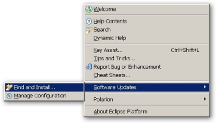
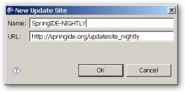
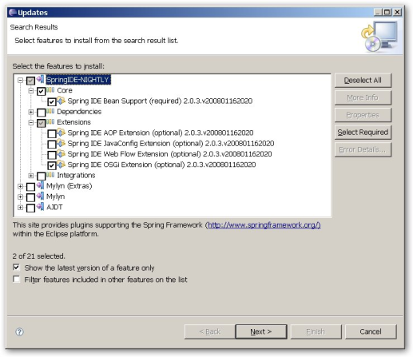
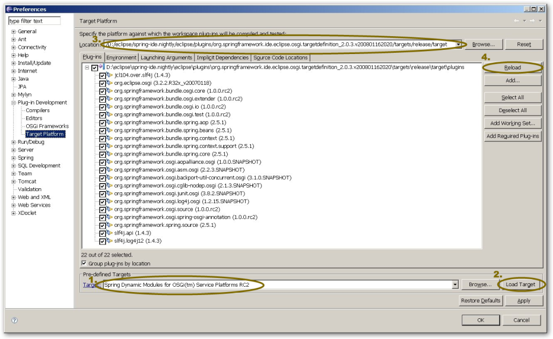
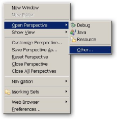
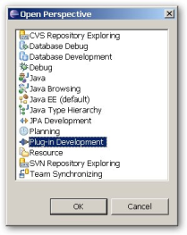
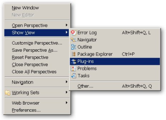
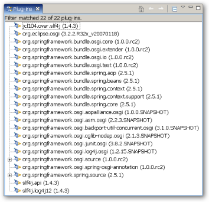

3.0.0.M01
Copyright © 2006 -, 2011 VMware Inc., Oracle Inc.
Documentation made available under the terms of the Eclipse Public License v1.0 and Apache License v2.0 which accompanies this distribution. The Eclipse Public License is available at http://www.eclipse.org/legal/epl-v10.html and the Apache License v2.0 is available at http://www.opensource.org/licenses/apache2.0.php. You may elect to redistribute this code under either of these licenses.
- Preface
- I. Introduction
- II. Reference Documentation
- 6. OSGi 4.2 Blueprint Container
- 7. Bundles and Application Contexts
- 8. Packaging and Deploying Spring-based OSGi applications
- 8.1. Bundle Format And Manifest Headers
- 8.2. Blueprint Manifest Configuration Comparison
- 8.3. Extender Configuration Options
- 8.4. Required Spring Framework And Gemini Blueprint Bundles
- 8.5. Optional Gemini Blueprint Bundles
- 8.6. Spring XML Authoring Support
- 8.7. Importing and Exporting Packages
- 8.8. Considerations When Using External Libraries
- 8.9. Diagnosing Problems
- 9. The Service Registry
- 9.1. Exporting A Spring Bean As An OSGi Service
- 9.1.1. Using The Service Registration
- 9.1.2.
org.osgi.framework.ServiceFactorySupport - 9.1.3. Controlling The Set Of Advertised Service Interfaces For An Exported Service
- 9.1.4. Controlling The Set Of Advertised Properties For An Exported Service
- 9.1.5. The depends-on Attribute
- 9.1.6. The context-class-loader Attribute
- 9.1.7. The
rankingAttribute - 9.1.8. The
cache-targetAttribute - 9.1.9.
serviceElement Attributes - 9.1.10. Service Registration And Unregistration Lifecycle
- 9.2. Defining References To OSGi Services
- 9.2.1. Referencing services via the @ServiceReference annotation
- 9.2.2. Imported Service Availability
- 9.2.3. Referencing An Individual Service
- 9.2.3.1. Controlling The Set Of Advertised Interfaces For The Imported Service
- 9.2.3.2. The
filterAttribute - 9.2.3.3. The
bean-nameAttribute - 9.2.3.4. The
availabilityAttribute - 9.2.3.5. The
depends-onAttribute - 9.2.3.6. The
context-class-loaderAttribute - 9.2.3.7. The
stickyAttribute - 9.2.3.8.
referenceElement Attributes - 9.2.3.9.
referenceAnd OSGi Service Dynamics - 9.2.3.10. Getting A Hold Of The Managed Service Reference
- 9.2.4. Referencing A Collection Of Services
- 9.2.5. Dealing With The Dynamics Of OSGi Imported Services
- 9.2.6. Blueprint
referenceComparison
- 9.3. Listener And Service Proxies
- 9.4. Accessing The Caller
BundleContext - 9.5. Exporter/Importer Listener Best Practices
- 9.6. Service Importer Global Defaults
- 10. Working With Bundles
- 11. Compendium Services
- 12. Testing OSGi based Applications
- 12.1. OSGi Mocks
- 12.2. Integration Testing
- III. Other Resources
- IV. Appendixes
Application development has seen significant changes in the last years, moving towards a simpler, more agile, POJO-based programming model in order to keep a fast pace. Dependency injection and Aspect Oriented Programming, which were once bleeding edge ideas, are used on a daily basis by most developers to manage and simplify the complexity of their applications.
However, in terms of deployment, things have remained mainly unchanged. Even though code bases are divided into modules, whether logical, conceptual or physical, at runtime they are seen as one monolithic application in which, making a change (be it large or small), requires a restart. OSGi aims to change this by allowing applications to be divided into modules that can have different life cycles, dependencies and still exist as a whole.
Eclipse Gemini Blueprint (formerly Spring Dynamic Modules) focuses on integrating Spring Framework's powerful, non-invasive programming model and concepts with the dynamics and modularity of the OSGi platform. It allows transparent exporting and importing of OSGi services, life cycle management and control. Moreover, the Spring DM model was standardized in OSGi r4.2, in the form of the Blueprint Container for which Eclipse Gemini Blueprint serves as the reference implementation (RI).
While every effort has been made to ensure that this documentation is comprehensive and there are no errors, nevertheless some topics might require more explanation and some typos might have crept in. If you do spot any mistakes or even more serious errors and you can spare a few cycles during lunch, please do bring the error to the attention of the Eclipse Gemini Blueprint team by raising an issue. Thank you.
In late 2009, as a member of the Gemini project proposal, SpringSource contributed the Spring Dynamic Modules (also known as Spring OSGi) project to the Eclipse Foundation. Spring DM v2 code base has been moved to Eclipse.org along with its issue tracker and forum. The project became dual licensed under Apache License and EPL.
While the name has changed, the code and its functionality remain the same. Existing Spring DM applications can be easily migrated to Eclipse Gemini Blueprint as mentioned in the migration guide.
While the project name has changed (to Eclipse Gemini Blueprint) and significant efforts have been made to reflect this in the project documentation and resources, there might be places that we have missed; if you find any, please report them to us.
This document is the reference guide for Gemini Blueprint. It explains the relationship between Gemini Blueprint and the OSGi 4.2 Blueprint specification, defines Gemini Blueprint concepts and semantics, the syntax for the OSGi Service Platform based namespaces, the Gemini Blueprint extender bundle and the OSGi manifest header entries defined by Gemini Blueprint.
For an introduction to OSGi or Spring, or Gemini Blueprint examples, please refer to Chapter 4, Getting Started - this documentation refers only to Gemini Blueprint and assumes the user is familiar with OSGi and Spring concepts.
Note: OSGi is a trademark of the OSGi Alliance. Project name is pending final approval from the Alliance.
The Spring Framework is the leading full-stack Java/JEE application framework. It provides a lightweight container and a non-invasive programming model enabled by the use of dependency injection, AOP, and portable service abstractions. The OSGi Service Platform offers a dynamic application execution environment in which modules (bundles) can be installed, updated, or removed on the fly. It also has excellent support for modularity and versioning.
Gemini Blueprint makes it easy to write Spring applications that can be deployed in an OSGi execution environment, and that can take advantage of the services offered by the OSGi framework. Gemini Blueprint support also makes development of OSGi applications simpler and more productive by building on the ease-of-use and power of the Spring Framework. For enterprise applications, the combination of Eclipse Gemini Blueprint and the OSGi platform provides:
-
Better separation of application logic into modules, with runtime enforcement of module boundaries
-
The ability to deploy multiple versions of a module (or library) concurrently
-
The ability to dynamically discover and use services provided by other modules in the system
-
The ability to dynamically install, update and uninstall modules in a running system
-
Use of the Spring Framework to instantiate, configure, assemble, and decorate components within and across modules.
-
A simple and familiar programming model for enterprise developers to exploit the features of the OSGi platform.
We believe that the combination of OSGi and Spring offers a comprehensive model for building enterprise applications.
The OSGi Alliance found valuable the programming model proposed by Gemini Blueprint (then Spring DM) and, in OSGi 4.2, standardized it by introducing the Blueprint Container, as part of the Compendium services.
Gemini Blueprint 2.x binaries require JDK level 7.0 or above, and OSGi R5.x (though R4.1 and even R4.0 might work) or above. For JDK < 1.7, consider using Gemini Blueprint 1.x. For JDK < 1.5, consider using Spring Dynamic Modules 1.x.
Bundles deployed for use with Gemini Blueprint should specify
"Bundle-ManifestVersion: 2" in their manifest (require OSGi R4 behaviour).
Note that for OSGi 4.2 specific functionality (such as the Blueprint Container),
an appropriate container needs to be used.
We test against Equinox and Felix as part of our release process.
Learning a new framework is not always straightforward. In this section, we (the Spring DM/Gemini Blueprint team) tried to provide, what we think is, an easy to follow guide for starting with Gemini Blueprint. Of course, feel free to create your own learning 'path' as you see fit and, if possible, please report back any improvements to the documentation that can help others.
As explained in Chapter 2, Why Gemini Blueprint?, Gemini Blueprint provides integration between Spring framework and OSGi. Thus, it is important to become acquainted with both of these frameworks (libraries or environments depending on how you want to name them). Throughout the Gemini Blueprint documentation, each section provides links to resources relevant however, it is best to become familiar with these topics beforehand.
Gemini Blueprint uses heavily Spring framework's core functionalty, such as the IoC container, resource abstraction and AOP infrastructure. While it is not important to know the Spring framework APIs, understanding the concepts behind them is. At a minimum, the idea behind IoC should be familiar. That being said, the more knowledge you have about Spring framework, the faster you will pick Gemini Blueprint. Besides the comprehensive documentation that explains the Spring Framework in detail, there are a lot of articles, blog entries and books on the topic - take a look at the Spring framework home page for more information. In general, this should be the starting point for OSGi (or Eclipse plugin) developers wanting to try Gemini Blueprint.
Java developers, new to OSGi, can start by reading the OSGi Alliance introduction, the OSGi specifications or one of the articles/blogs available on the internet.
As an alternative to the recommended Spring documentation, if OSGi 5.x is an option, one can read the Blueprint Container specification for a quick introduction to dependency injection and Gemini Blueprint functionality. Note that Blueprint is a subset of Spring and Gemini Blueprint and we recommend the official documentation to get access to the whole set of features.
If you encounter issues or you are just looking for advice, feel free to use one of the links below:
Professional, from-the-source support, with guaranteed response time, is available from Pivotal, the company behind Gemini Blueprint and Spring.
For information on the Gemini Blueprint source code repository, nightly builds and snapshot artifacts please see the Gemini Blueprint home page.
You can help make Gemini Blueprint best serve the needs of the Spring community by interacting with developers through the Spring Community stack overflow.
If you encounter a bug or want to suggest an improvement, please create a ticket on the Gemini Blueprint issue tracker.
To stay up to date with the latest news and announcements in the Spring eco system, subscribe to the Spring Community Portal.
Lastly, you can follow the project team on Twitter (Adrian, Costin, Olaf)
While a relatively young project, each version of Gemini Blueprint (even minor ones) offers new functionality. This chapter is a guide to the new and improved feature and intended as a high-level, short summary. Please follow the appropriate links for more in-depth information.
Gemini Blueprint requires JDK 7 to run (or compile). The framework code has been revised to take advantage of the JDK 8 features.
Besides the Java 8 upgrade, Gemini Blueprint requires Spring 4.3.x to get access to the latest framework features and JDK optimizations.
With 2.1, gemini blueprint ships the gemini-blueprint-extensions bundle, supporting the @ServiceReference annotation on fields and setter methods to inject service references without using a service import in the blueprint context's XML declaration. See Section 9.2.1, “Referencing services via the @ServiceReference annotation” for more information.
Gemini Blueprint served as the basis for the Blueprint Container specification, introduced by OSGi 5 Gemini Blueprint stands as the RI for the aforementioned specification, providing the Blueprint API and implementation out of the box. Various aspect of Gemini Blueprint have been adjusted for consistency to the Blueprint specification. For more information on the two models, see Chapter 6, OSGi 4.2 Blueprint Container for more information.
Gemini Blueprint requires JDK 7 to run (or compile). The framework code has been revised to take advantage of the JDK 7 features.
Gemini Blueprint served as the basis for the Blueprint Container specification, introduced by OSGi 4.2. Gemini Blueprint stands as the RI for the aforementioned specification, providing the Blueprint API and implementation out of the box. Various aspect of Gemini Blueprint have been adjusted for consistency to the Blueprint specification. For more information on the two models, see Chapter 6, OSGi 4.2 Blueprint Container for more information.
Gemini Blueprint requires JDK 5 to run (or compile). The framework code has been
revised to take advantage of the JDK 5 features such as language improvements, concurrency and generics: for example, various enum-like classes
used by the exporter and importer API have been deprecated and replaced with proper Java 5enums.
Considerable effort has been spent to keep the code backwards compatible however, it is recommended to compile the code against the Gemini Blueprint 2.x
code and perform sanity checks before upgrading.
Besides the Java 5 upgrade, Gemini Blueprint requires Spring 3.x to get access to the latest framework features and JDK optimizations.
Gemini Blueprint provides several improvements for service imports (whether single or collection based) in terms of speed, configuration and service lifecycle. Section 9.2, “Defining References To OSGi Services” provides more details.
Continuing the work in Spring DM 1.2.x, Gemini Blueprint executes all user code using its credentials (the managed bundle permissions). See Appendix A, Security Integration for more information.
![[Note]](images/admons/note.png) | Note |
|---|---|
| This section includes the updates from Spring Dynamic Modules (Spring DM) project and previous gemini blueprint versions. |
Since 1.2.x, Spring DM is aware of secured environments by making use of dedicated privileged blocks for executing security sensitive code. Thus, Spring DM can run as a trusted library without requiring escalated permissions for its managed bundles. See Appendix A, Security Integration for more information.
1.2.x provides integration with the Configuration Admin, part of the OSGi compendium services. Chapter 11, Compendium Services provides more details on the topic.
Since 1.2.0 M2, the Spring DM bundles symbolic names have been aligned with Spring's 2.5.6+. Thus the prefix
org.springframework.bundle.osgi has been changed to org.eclipse.gemini.blueprint; for example
Spring DM extender symbolic name was changed from org.springframework.bundle.osgi.extender to org.eclipse.gemini.blueprint.extender
(notice the missing bundle word). Additionally, the documentation has been updated to reflect Spring 2.5.6+ symbolic names.
To minimize the number of repositories used and the confusion caused by OSGified vs non-OSGified artifacts especially to users using SpringSource dm Server,
after 1.2.0 RC1, Spring DM aligned as many of its dependencies as possible with SpringSource EBR.
In practice this means that Spring framework artifacts, such as spring-aop.jar can be now found as org.springframework.aop.jar;
We apologize for any inconvenience created to users relying on these naming conventions.
This part of the reference documentation explains the core functionality offered by Gemini Blueprint.
Chapter 6, OSGi 4.2 Blueprint Container describes the relationship between Spring DM and OSGi 4.2 Blueprint Container specification (part of the Compendium Services) and the similiarities and differences between them.
Chapter 7, Bundles and Application Contexts describes the relationship between an OSGi Bundle and a Spring Application Context, and introduces the Spring Extender Bundle support for instantiating application contexts automatically.
Chapter 8, Packaging and Deploying Spring-based OSGi applications describes how to deploy the Spring Framework jar files in an OSGi environment, and how to reference external APIs from your application bundles should you need to do so. This chapter also explains some of the issues to be aware of when using existing enterprise libraries not designed for OSGi in an OSGi environment.
Chapter 9, The Service Registry describes how to export Spring beans as services in the OSGi service registry, and how to inject references to OSGi services into beans. This chapter also defines how the dynamic life-cycle of OSGi services and bundles is supported.
Chapter 10, Working With Bundles describes how to declare a bean that represents an OSGi bundle, including support for installing new bundles into the OSGi platform.
Chapter 11, Compendium Services describes the support provided for the OSGi Compendium Services, specifically the Configuration Admin service.
Chapter 12, Testing OSGi based Applications explains the integration testing support provided by Gemini Blueprint. This support enables you to write simple JUnit integration tests that can start up an OSGi environment, install the bundles needed for the integration test, execute the test case(s) inside of OSGi, and return the results to the runner. This makes it easy to integrate OSGi integration testing into any environment that can work with JUnit.
Based on the Gemini Blueprint programming model, the OSGi Alliance introduced in OSGi 4.2 Release the Blueprint Container specification (part of the Compendium Service). Gemini Blueprint 1.0 serves as the Blueprint Reference Implementation - the official, complete implementation of the spec.
Existing and new users have the freedom to mix and match the programming model they want, since Eclipse Gemini Blueprint supports
both the Spring DM 1.x declarations and the Blueprint one, inside the same application, provided the default namespace is Blueprint
and the Blueprint files are stored in the folder META-INF/spring.
Please note that this documentation will focus on Gemini Blueprint specific configurations and options; for Blueprint specific behaviour please refer to the OSGi 4.2 Compendium spec, section 121.
The Blueprint Container spec is part of the OSGi 4.2 release and relies on it, in its API. Thus, in order to use Blueprint, one must use an OSGi 4.2 compatible platform as a runtime environment. Gemini Blueprint itself requires only an OSGi 4.0 framework so if 4.2 is not an option, one can safely downgrade at the loss of the Blueprint model which can be built on top of Spring/Gemini Blueprint.
| Note |
|---|---|
On environments prior to OSGi 4.2, Gemini Blueprint will disable the Blueprint functionality automatically - users will be notified
through a log message similar to the following:
Pre-4.2 OSGi platform detected; disabling Blueprint Container functionality |
There are a lot of similarities in terms of functionality and configuration between Gemini Blueprint 1.x and Blueprint which should be
no surprise considering that Spring DM was the basis of the Blueprint spec. In addition to fully supporting the Blueprint configuration schema,
DM 2.x enhanced its declarations by providing option that allow for Blueprint specific behaviour. The table below aggregates the most
important user facing differences between Spring/Gemini Blueprint configurations and Blueprint. Additional comparison information is available
throughout the documentation (such as Section 8.2, “Blueprint Manifest Configuration Comparison” or Section 9.1.10.2, “Blueprint service Comparison”).
Again, one can simply switch between the two definition styles, if need be.
Most of the XML declarations are similar between Spring and Blueprint. Using the Spring namespace mechanism, the same configuration can contain both Spring, Gemini Blueprint, Blueprint and other namespaces. Moreover, custom elements can be used for virtually all elements of a Spring configuration (namespace, bean declaration, decoration, etc...). The table below focuses only on the usual, standard Spring namespaces and their Blueprint equivalent.
Table 6.1. XML Configuration Differences
| Element/Attribute | Gemini Blueprint | Blueprint |
|---|---|---|
| Namespace Declaration |
or | http://www.osgi.org/xmlns/blueprint/v1.0.0 |
| Root Element | <beans> | <blueprint> |
| Default Lazy | default-lazy | default-activation |
| Default Init Method | default-init-method | - |
| Default Destroy Method | default-destroy-method | - |
| Default Autowire Strategy | default-autowire, default-autowire-candidates | - |
| Root Element | <beans> | <blueprint> |
| Bean ID | id | id |
| Bean Name/Alias | name/<alias> | - |
| Bean Class | class | class |
| Bean Scope Name | scope | scope |
| Built-in Scopes | singleton, prototype, request, session, bundle | singleton, prototype |
| Lazy Initialization Name/Values | lazy-init=true/false | activation=lazy/eager |
| Depends | depends-on | depends-on |
| Init Method | init-method | init-method |
| Destroy Method | destroy-method | destroy-method |
| Factory Method | factory-method | factory-method |
| Factory Bean | factory-bean | factory-ref |
| Bean Inheritance | parent | - |
| Autowire Strategy | autowire, autowire-candidate | - |
| Constructor | <constructor-arg> | <argument> |
| Property | <property> | <property> |
| Value | <value> | <value> |
| Service Exporter | <service> | <service> |
| Service Importer | <reference>/<list>/<set> | <reference>/<list> |
The configurations below are equivalent in terms of functionality:
<?xml version="1.0" encoding="UTF-8"?> <blueprint xmlns="http://www.osgi.org/xmlns/blueprint/v1.0.0" default-activation="lazy"> <bean id="object" class="java.lang.Object"/> <bean id="length" class="java.lang.Integer"> <argument value="4"/> </bean> <bean id="buffer" class="java.lang.StringBuffer" depends-on="simple"> <property name="length" ref="length"/> </bean> <bean id="current-time" class="java.lang.System" factory-method="currentTimeMillis" scope="prototype"/> <bean id="list" class="java.util.ArrayList" destroy-method="clear" activation="eager"> <argument ref="length"/> </bean> </blueprint>
<?xml version="1.0" encoding="UTF-8"?> <beans xmlns="http://www.springframework.org/schema/beans" xmlns:xsi="http://www.w3.org/2001/XMLSchema-instance" xsi:schemaLocation="http://www.springframework.org/schema/beans http://www.springframework.org/schema/beans/spring-beans.xsd" default-lazy-init="true"> <bean id="object" class="java.lang.Object"/> <bean id="length" class="java.lang.Integer"> <constructor-arg value="4"/> </bean> <bean id="buffer" class="java.lang.StringBuffer" depends-on="simple"> <property name="length" ref="length"/> </bean> <bean id="current-time" class="java.lang.System" factory-method="currentTimeMillis" scope="prototype"/> <bean id="list" class="java.util.ArrayList" destroy-method="clear" lazy-init="false"> <constructor-arg ref="length"/> </bean> </beans>
As mentioned before, in Gemini Blueprint one can mix and match the namespaces provided the default namespace is Blueprint
and the Blueprint files are stored in the folder META-INF/spring:
<blueprint xmlns="http://www.osgi.org/xmlns/blueprint/v1.0.0" xmlns:beans="http://www.springframework.org/schema/beans" xmlns:xsi="http://www.w3.org/2001/XMLSchema-instance" xsi:schemaLocation=" http://www.osgi.org/xmlns/blueprint/v1.0.0 http://www.osgi.org/xmlns/blueprint/v1.0.0/blueprint.xsd http://www.springframework.org/schema/beans http://www.springframework.org/schema/beans/spring-beans.xsd"> <beans:bean id="anInteger" class="java.lang.Integer"> <beans:constructor-arg value="10"/> </beans:bean> <service ref="anInteger" interface="java.lang.Comparable" /> </blueprint>
The example above uses the Gemini Blueprint and Spring beans namespaces.
From a container perspective, the Blueprint spec standardizes the a subset of the Spring container. A high-level view comparison, by no means comprehensive, is summarized in the table below:
Table 6.2. Container Capabilities Differences
| Feature | Gemini Blueprint | Blueprint |
|---|---|---|
| Object Instantiation | ||
| Constructor Instantiation | Y | Y |
| Static Factory Instantiation | Y | Y |
| Instance Factory Instantiation | Y | Y |
| Dependency Injection | ||
| Constructor Injection | Y | Y |
| Setter Injection | Y | Y |
| Field Injection | Y | N |
| Method Injection | Y | N |
| Arbitrary Method Injection | Y | N |
| Autowiring | Y | N |
| Component Lifecycle | ||
| Lazy Initialization | Y | Y |
| Bean Scopes | Y | Y |
| Custom Bean Scopes | Y | N |
| Built-in Callbacks | Y | N |
| Custom Callbacks | Y | Y |
| Initialization Processing | Y | N |
As with the XML configuration, since Gemini Blueprint translates the Blueprint configuration into Spring metadata, one can rely on Spring for features
beyond the Blueprint container. For example, one can configure a bean using Blueprint and use annotation on the same instance, for field injection.
The same object can implement Spring's Aware interfaces or rely on other post processors for certain behaviour.
Note that additional information on Blueprint is available through out the documentation. These being said, it is highly recommended to read and use the Blueprint specification as guidance, if the Blueprint Container becomes the programming model of choice.
There are no extra jars or steps that need to be executed to enable the Blueprint functionality in Gemini Blueprint. This is built directly into the core, in fact the Blueprint APIs are exported by the Gemini Blueprint core. Please see the next section for information on how to install Gemini Blueprint and the OSGi compendium spec (section 121) for Blueprint related information such as bootstrapping and configuration locations. For those in a hurry, simply install and start the Gemini Blueprint jars (io, core, extender) and their dependencies (namely Spring and slf4j) and you should be all set: Gemini Blueprint will automatically detect the running environment and the types of bundles started.
The unit of deployment (and modularity) in OSGi is the bundle (see section 3.2 of the OSGi Service Platform Core Specification). A bundle known to the OSGi runtime is in one of three steady states: installed, resolved, or active. Bundles may export services (objects) to the OSGi service registry, and by so doing make these services available for other bundles to discover and to use. Bundles may also export Java packages, enabling other bundles to import the exported types.
In Spring the primary unit of modularity is an application context, which contains some number of beans (objects managed by the Spring application context). Application contexts can be configured in a hierarchy such that a child application context can see beans defined in a parent, but not vice-versa. The Spring concepts of exporters and factory beans are used to export references to beans to clients outside of the application context, and to inject references to services that are defined outside of the application context.
There is a natural affinity between an OSGi bundle and a Spring application context. Using Gemini Blueprint, an active bundle may contain a Spring application context, responsible for the instantiation, configuration, assembly, and decoration of the objects (beans) within the bundle. Some of these beans may optionally be exported as OSGi services and thus made available to other bundles; beans within the bundle may also be transparently injected with references to OSGi services.
This chapter describes the lifecycle relationship between bundles and their application contexts, as imposed by Gemini Blueprint based on the events occurring at runtime, inside an OSGi environment.
The component responsible for detecting the Spring-powered bundles and instantiating
their application context is the Gemini Blueprint extender. It serves the same purpose as the ContextLoaderListener
does for Spring web applications. Once the extender bundle is installed
and started it looks for any existing Spring-powered bundles that are
already in the ACTIVE state and creates application contexts on their
behalf. In addition, it listens for bundle starting events and
automatically creates an application context for any Spring-powered
bundle that is subsequently started. Section 8.1, “Bundle Format And Manifest Headers”
describes what the extender recognizes as a "Spring-powered bundle" while
Section 8.3, “Extender Configuration Options” how the extender can be configured.
The extender monitors the lifecycle of the bundle it manages and will destroy automatically the contexts for bundles
that are stopped. When the extender bundle itself is stopped, it will automatically close all the contexts that it manages,
based on the service dependency between them.
The extender bundle symbolic name is org.eclipse.gemini.blueprint.extender.
Once started, the extender analyses the existing started bundles and monitors any new bundle that will start. Once a Blueprint or Gemini Blueprint configuration is detected, the extender will create an application context for it in an asynchronous manner, on a different thread then the one starting the bundle (or delivering the STARTED event). This behaviour follows the OSGi specification recommendation and ensures that starting an OSGi Service Platform is fast and that bundles with service inter-dependencies do not cause deadlock (waiting for each other) on startup, as pictured below:
The extender considers only bundles successfully started, that is, bundles in ACTIVE state; bundles in other states are ignored. Therefore a Spring-powered/Blueprint bundle will have its application context created after it has been fully started. It is possible to force synchronous/serialized creation of application contexts for started bundles, on a bundle-by-bundle basis. See Section 8.1, “Bundle Format And Manifest Headers” for information on how to specify this behaviour.
If application context creation fails for any reason then the failure cause is logged. The bundle remains in the ACTIVE state; the application context lifecycle will not influence the bundle lifecycle in anyway. Naturally, since the context has failed, so will the functionality associated with it; for example there will be no services exported to the registry from the application context in this scenario.
If an application context declares mandatory availability for certain imported OSGi services, the creation of the application context is blocked until all the mandatory dependencies can be satisfied through matching services available in the OSGi service registry. In practice, for most enterprise applications built using Gemini Blueprint services, the set of available services and bundles will reach a steady state once the platform and its installed bundles are all started. In such a world, the behaviour of waiting for mandatory dependencies simply ensures that bundles A and B, where bundle A depends on services exported by bundle B, may be started in any order.
A timeout applies to the wait for mandatory dependencies to be
satisfied. By default the timeout is set to 5 minutes, but this value
can be configured using the timeout directive. See
Section 8.1, “Bundle Format And Manifest Headers” for details.
Blueprint users could achieve the same result through the blueprint.timeout
attribute declared on the Bundle-SymbolicName
It is possible to change the application context creation semantics so that application context creation fails if all mandatory services are not immediately available upon startup (see the aforementioned section for more information). Again, note that regardless of the configuration chosen, the failure of the application context will not change the bundle state.
For more information on the availability of imported services, see Section 9.2.2, “Imported Service Availability”
Once the application context creation for a bundle has
completed, the application context object is automatically exported as
a service available through the OSGi Service Registry. The context is
published under the interface
org.springframework.context.ApplicationContext (and
also all of the visible super-interfaces and types implemented by the
context). The published service has a service property named
org.springframework.context.service.name whose
value is set to the bundle symbolic name of the bundle hosting the
application context. In case of a Blueprint bundle, the container will be published
under org.osgi.service.blueprint.container.BlueprintContainer
while the bundle symbolic name will be published under osgi.blueprint.container.symbolicname
property.
It is possible to prevent publication of the application context as a service using a directive in the bundle's manifest. See Section 8.1, “Bundle Format And Manifest Headers” for details.
Note: the application context is published as a service
primarily to facilitate testing, administration, and management.
Accessing this context object at runtime and invoking
getBean() or similar operations is discouraged. The
preferred way to access a bean defined in another application context
is to export that bean as an OSGi service from the defining context,
and then to import a reference to that service in the context that
needs access to the service. Going via the service registry in this
way ensures that a bean only sees services with compatible versions of
service types, and that OSGi platform dynamics are respected.
OSGi is a dynamic platform: bundles may be installed, started, updated, stopped, and uninstalled at any time during the running of the framework.
When an active bundle is stopped, any services it exported during its lifetime are automatically unregistered and the bundle returns to the resolved state. A stopped bundle should release any resources it has acquired and terminate any threads. Packages exported by a stopped bundle continue to be available to other bundles.
A bundle in the resolved state may be uninstalled: packages that were exported by an uninstalled bundle continue to be available to bundles that imported them (but not to newly installed bundles).A bundle in the resolved state may also be updated. The update process migrates from one version of a bundle to another version of the same bundle.
Finally of course, a resolved bundle can be started, which transitions it to the active state.
The diagram below represents the bundle states and its transitions:
The OSGi PackageAdmin
refreshPackages operation refreshes packages across
the whole OSGi framework or a given subset of installed bundles. During
the refresh, an application context in an affected bundle will be
stopped and restarted. After a refreshPackages
operation, packages exported by older versions of updated bundles, or
packages exported by uninstalled bundles, are no longer available.
Consult the OSGi specifications for full details.
When a Spring-powered or Blueprint bundle is stopped, the application context
created for it is automatically destroyed. All services exported by the
bundle will be unregistered (removed from the service registry) and the
normal application context tear-down life-cycle is observed
(org.springframework.beans.factory.DisposableBean implementors
and destroy-method
callbacks are invoked on beans in the context).
If a Spring-powered bundle that has been stopped is subsequently re-started, a new application context will be created for it.
The Spring Framework defines a resource abstraction for loading
resources within an application context (see Spring's
resource abstraction). All resource loading is done through the
org.springframework.core.io.ResourceLoader associated with the application
context. The org.springframework.core.io.ResourceLoader is also
available to beans wishing to load resources programmatically. Resource paths with
explicit prefixes - such as classpath: - are treated uniformly
across all application context types (for example, web application
contexts and classpath-based application contexts). Relative resource
paths are interpreted differently based on the type of application
context being created. This enables easy integration testing outside
the ultimate deployment environment.
OSGi 4.0.x specification defines three different spaces from which a resource can be loaded. Gemini Blueprint supports all of them through its dedicated OSGi-specific application context and dedicated prefixes:
Table 7.1. OSGi resource search strategies
| OSGi Search Strategy | Prefix | Explanation |
|---|---|---|
| Class Space | classpath: | Searches the bundle classloader (the bundle, all imported packages and required bundles). Forces the bundle to be resolved.
This method has similar semantics to
Bundle#getResource(String) |
| Class Space | classpath*: | Searches the bundle classloader (the bundle and all imported packages and required bundles). Forces the bundle to be resolved.
This method has similar semantics to
Bundle#getResources(String)
|
| JAR File (or JarSpace) | osgibundlejar: | Searches only the bundle jar. Provides low-level access without requiring the bundle to be resolved. |
| Bundle Space | osgibundle: | Searches the bundle jar and its attached fragments (if there are any). Does not create a class loader or force the bundle to be resolved. |
Please consult section 4.3.12 of the OSGi specification for an in depth explanation of the differences between them.
| Note |
|---|---|
If no prefix is specified, the bundle space (osgibundle:) will be used. |
| Note |
|---|---|
Due to the OSGi dynamic nature, a bundle classpath can change during its life time (for example when dynamic imports are used). This might cause different
classpath Resources to be returned when doing pattern matching based on the running environment or target platform. |
All of the regular Spring resource prefixes such as file: and
http: are also supported, as are the pattern matching wildcards.
Resources loaded using such prefixes may come from any location, they
are not restricted to being defined within the resource-loading bundle
or its attached fragments.
OSGi platforms may define their own unique prefixes for accessing
bundle contents. For example, Equinox defines the bundleresource: and
bundlentry: prefixes. These platform specific prefixes may also be
used with Gemini Blueprint, at the cost, of course, of tying yourself to a
particular OSGi implementation.
Gemini Blueprint introduces a new bean scope named bundle. This scope is relevant for
beans exported as an OSGi service and can be described as one instance per bundle.
Beans exported as OSGi service, that have bundle scope, will result in a different instance created for
each unique bundle that imports the service through the OSGi service registry. Consumers of the same bundle (whether defined
through Gemini Blueprint or not) will see the same bean instance. When a bundle has stopped importing the bundle (for whatever reason),
the bean instance is disposed.
To the declaring bundle, a bundle-scoped bean behaves just like a singleton (i.e. there is only
one instance per bundle, including the declaring one).This contract lifecycle is similar to that of the
org.osgi.framework.ServiceFactory interface.
For more information regarding service publication and consumption, see Chapter 9, The Service Registry.
![[Important]](images/admons/important.png) | Important |
|---|---|
| The bundle scope is relevant, only if the declaring bean is consumed through the OSGi service registry. That is, instances are created and destroyed (tracked) only when the bean exported as a service, is requested or released as an OSGi service by other bundles. |
In general there is no need to depend on any OSGi APIs when using
the Gemini Blueprint support. If you do need
access to the OSGi BundleContext object for your
bundle, then Spring makes this easy to do.
The OSGi application context created by the Spring extender will
automatically contain a bean of type BundleContext
and with name bundleContext. You can inject a
reference to this bean into any bean in the application context either
by-name or by-type. In addition, Gemini Blueprint defines the
interface
org.eclipse.gemini.blueprint.context.BundleContextAware:
public interface BundleContextAware {
public void setBundleContext(BundleContext context);
}
Any bean implementing this interface will be injected with a
reference to the bundle context when it is configured by Spring. If you
wish to use this facility within a bundle, remember to import the
package org.eclipse.gemini.blueprint.context in your
bundle manifest since otherwise the interface will not be visible to your bundle.
The application context is bound to the bundle in which it lives. Thus, if the declaring bundle is being shutdown (for whatever reasons), the application context will be destroyed as well, all exported services being unregistered and all service imported dispose of.
As opposed to the application creation, the application context is destroyed in a synchronized manner, on the same thread that stops the bundle. This is required since once stopped, a bundle can not longer be used (even for class loading) preventing the application context shutdown from executing correctly.
Note that a bundle can be closed individually or as part of a bigger event such as shutting down the entire OSGi platform. In this case or when the extender bundle is being closed down, the application contexts will be closed in a managed manner, based on the service dependencies between them. Please see the next section for more details.
If the extender bundle is stopped, then all the application contexts created by the extender will be destroyed. The algorithm described here is identical to that used by the Blueprint specification (section 121.3.11). Application contexts are shutdown in the following order:
-
Application contexts that do not export any services, or that export services that are not currently referenced, are shutdown in reverse order of bundle id. (Most recently installed bundles have their application contexts shutdown first).
-
Shutting down the application contexts in step 1 may have released references these contexts were holding such that there are now additional application contexts that can be shutdown. If so, repeat step 1 again.
-
If there are no more active application contexts, we have finished. If there are active application contexts then there must be a cyclic dependency of references. The circle is broken by determining the highest ranking service exported by each context: the bundle with the lowest ranking service in this set (or in the event of a tie, the highest service id), is shut down. Repeat from step 1.
A traditional Spring application uses either a single application context, or a parent context containing service layer, data layer, and domain objects with a child context containing web layer components. The application context may well be formed by aggregating the contents of multiple configuration files.
When deploying an application to OSGi the more natural structure is to package the application as a set of peer bundles (application contexts) interacting via the OSGi service registry. Independent subsystems should be packaged as independent bundles or sets of bundles (vertical partitioning). A subsystem may be package in a single bundle, or divided into several bundles partitioned by layer (horizontal partitioning). A straightforward web application may for example be divided into four modules (bundles): a web bundle, service layer bundle, data layer bundle, and domain model bundle. Such an application would look like this:
In this example the data layer bundle yields a data layer application context that contains a number of internal components (beans). Two of those beans are made publicly available outside of the application context by publishing them as services in the OSGi service registry.
The service layer bundle yields a service layer application context that contains a number of internal components (beans). Some of those components depend on data layer services, and import those services from the OSGi service registry. Two of the service layer components are made externally available as services in the OSGi service registry.
The web component bundle yields a web application context that contains a number of internal components (beans). Some of those components depend on application services, and import those services from the OSGi service registry. Since the domain model bundle contributes only domain model types, but does not need to create any components of its own, it has no associated application context.
Each application module should be packaged as an OSGi bundle. A
bundle is essentially a jar file with a
META-INF/MANIFEST.MF file containing a series of
headers recognized by the OSGi Service Platform. See the OSGi Service
Platform Core Specification section 3.2 for details. Some OSGi
implementations may support exploded jar files, but the format remains
the same.
The Spring extender recognizes a bundle as "Spring-powered" and will create an associated application context when the bundle is started and one or both of the following conditions is true:
-
The bundle path contains a folder
META-INF/springwith one or more files in that folder with a '.xml' extension. -
META-INF/MANIFEST.MFcontains a manifest headerSpring-Context.
In addition, if the optional
SpringExtender-Version header is declared in the
bundle manifest, then the extender will only recognize bundles where the
specified version constraints are satisfied by the version of the
extender bundle (Bundle-Version). The value of the
SpringExtender-Version header must follow the syntax
for a version range as specified in section 3.2.5 of the OSGi Service
Platform Core Specification.
In the absence of the Spring-Context header the
extender expects every ".xml" file in the
META-INF/spring folder to be a valid Spring
configuration file, and all directives (see below) take on their default
values.
![[Tip]](images/admons/tip.png)
The Spring-Context manifest header may be used
to specify an alternate set of configuration files. The resource paths
are treated as relative resource paths and resolve to entries defined in
the bundle and the set of attached fragments.
When the
Spring-Context header defines at least one
configuration file location, any files in
META-INF/spring are ignored unless directly
referenced from the Spring-Context header.
The syntax for the Spring-Context header value
is:
Spring-Context-Value ::= context ( ',' context ) *
context ::= path ( ';' path ) * (';' directive) *
This syntax is consistent with the OSGi Service Platform common header syntax defined in section 3.2.3 of the OSGi Service Platform Core Specification.
For example, the manifest entry:
Spring-Context: config/account-data-context.xml, config/account-security-context.xml
will cause an application context to be instantiated using the
configuration found in the files
account-data-context.xml and
account-security-context.xml in the bundle jar
file.
A number of directives are available for use with the
Spring-Context header. These directives are:
-
create-asynchronously (false|true): controls whether the application context is created asynchronously (the default), or synchronously.
For example:
Spring-Context: *;create-asynchronously:=false
Creates an application context synchronously, using all of the "*.xml" files contained in the
META-INF/springfolder.Spring-Context: config/account-data-context.xml;create-asynchrously:=false
Creates an application context synchronously using the
config/account-data-context.xmlconfiguration file. Care must be taken when specifying synchronous context creation as the application context will be created on the OSGi event thread, blocking further event delivery until the context is fully initialized. If an error occurs during the synchronous creation of the application context then aFrameworkEvent.ERRORevent is raised. The bundle will still proceed to theACTIVEstate. -
wait-for-dependencies (true|false): controls whether or not application context creation should wait for any mandatory service dependencies to be satisfied before proceeding (the default), or proceed immediately without waiting if dependencies are not satisfied upon startup.
For example:
Spring-Context: config/osgi-*.xml;wait-for-dependencies:=false
Creates an application context using all the files matching "osgi-*.xml" in the config directory. Context creation will begin immediately even if dependencies are not satisfied. This essentially means that mandatory service references are treated as though they were optional - clients will be injected with a service object that may not be backed by an actual service in the registry initially. See Section 9.2.3.9, “
referenceAnd OSGi Service Dynamics” for more details. -
timeout (300): the time to wait (in seconds) for mandatory dependencies to be satisfied before giving up and failing application context creation. This setting is ignored if
wait-for-dependencies:=falseis specified. The default is 5 minutes (300 seconds).For example:
Spring-Context: *;timeout:=60
Creates an application context that waits up to 1 minute (60 seconds) for its mandatory dependencies to appear.
-
publish-context (true|false): controls whether or not the application context object itself should be published in the OSGi service registry. The default is to publish the context.
For example:
Spring-Context: *;publish-context:=false
If there is no
Spring-Contextmanifest entry, or no value is specified for a given directive in that entry, then the directive takes on its default value.
The table below summarizes the differences between the manifest configuration options in Eclipse Gemini Blueprint/Spring DM and Blueprint Container:
Table 8.1. Configuration Setting Differences
| Option | Gemini Blueprint/Spring DM | Blueprint |
|---|---|---|
| Default Configuration Location | META-INF/spring | OSGI-INF/blueprint |
| Custom Locations Header | Spring-Context | Bundle-Blueprint |
| Attribute Header | Spring-Context | Bundle-SymbolicName |
| Asynchronous Creation Attribute | create-asynchronously | - |
| Startup Mandatory Dependencies Attribute | wait-for-dependencies | blueprint.graceperiod |
| Startup Mandatory Timeout Attribute | timeout (in s) | blueprint.timeout (in ms) |
| Container API Service Publication Attribute | publish-context | - |
The manifests below are equivalent in terms of settings:
Bundle-SymbolicName: org.example.account.bundle Spring-Context: config/account-data-context.xml, config/osgi-*.xml;wait-for-dependencies:=true; timeout:=10

|
All Gemini Blueprint/Spring DM specific attributes are grouped under |
|
Timeout specified in seconds. |
Bundle-SymbolicName: org.example.account.bundle;
|
Blueprint settings are spread between |
|
Timeout specified in milliseconds. |
Aside from bundle-specific configurations, Gemini Blueprint/Spring DM allows the core extender generic behaviour be configured. This is useful when
embedding Spring DM inside a managed environment or when a bundles-wide functionality is desired. To allow for extensible configuration,
the extender relies on OSGi fragments to override its defaults. The extender looks for all XML files
under META-INF/spring/extender folder in its bundle space and assembled them into an application context
(of type OsgiBundleXmlApplicationContext)
that is used internally as its configuration. To override a default setting of the extender, look up the appropriate bean
name from the table below, define it in a suitable manner and then attach it as a fragment to the
spring-osgi-extender.jar, using:
Fragment-Host: org.eclipse.gemini.blueprint.extender
The following beans are currently recognized by the extender:
Table 8.2. Extender Configuration Options
| Bean Name | Type | Role | Default Behaviour/Value |
|---|---|---|---|
taskExecutor | TaskExecutor
[a] | Creates and runs the Spring application contexts associated with each bundle. The task executor is responsible for managing its own pool of threads used by the application contexts | ThreadPoolTaskExecutor with a maximum number of threads equal to the number of available processors is used by default. |
shutdownTaskExecutor | TaskExecutor
[b] | Destroys managed Spring application contexts associated with each bundle. The task executor is responsible for managing its own pool of threads used by the application contexts | ThreadPoolTaskExecutor with a single thread is used by default which means all application context will be destroyed in a serialized manner (which is
desired). Since the shutdown order normally matters, it is recommended to keep the default implementation or, for managed environments, to use a thread-pool
that executes only one task at a time (so that contexts are stopped in the given order). |
extenderProperties | java.util.Properties | Defines simple properties such as the maximum time for contexts to gracefully close | See the defaults below |
osgiApplicationEventMulticaster | ApplicationEventMulticaster
[c]
|
ApplicationEventMultiCaster used for propagating Gemini Blueprint/Spring DM events
to third parties.
| An instance of
SimpleApplicationEventMulticaster is used.
See AbstractApplicationContext
javadoc
for more information regarding available beans in an application context. |
applicationContextCreator | OsgiApplicationContextCreator
[d]
| Allows customization of the application context created by the extender. This includes changing the application context class type or additional processing (see below). | The Extender default behaviour applies. |
| (irrelevant) | OsgiBeanFactoryPostProcessor
[d]
| Similar to Spring's BeanFactoryPostProcessor interface, beans of type
OsgiBeanFactoryPostProcessor are automatically detected and applied to all contexts created by the
extender (whether user-defined or not). This type of post processor
is useful as it allows customization of the bean factory such as adding/removing/changing existing bean definitions or adding new bean
instances. | The Extender default behaviour applies. |
osgiApplicationContextListener | OsgiBundleApplicationContextListener
[e]
| Application context event listener registered automatically by the extender. | Default implementation provides logging of the managed application contexts lifecycle. |
[a] org.springframework.core.task[b] org.springframework.core.task[c] org.springframework.context.event[d] org.eclipse.gemini.blueprint.extender package[e] org.eclipse.gemini.blueprint.context.event package | |||
From the extenderProperties bean, the following properties are recognized:
In addition, in Eclipse Gemini Blueprint a new system property has been introduced to control whether bundles providing namespace extensions should be considered in RESOLVED (default)
or STARTED state. The former allows namespaces to be picked up as soon as a bundle installed into the OSGi framework has its dependencies resolved - the advantage is that the namespaces become
available as soon as possible but on the downside, one needs to remove the source bundle in order to remove the namespace.
The latter forces namespaces to be considered only when the source bundles are actually started - to remove a namespace simply stop the owning bundle. However the order in which the bundles
are started influences the available namespace - the bundles providing the namespaces need to start before the bundles that require them - depending on the app such a dependency graph can create
some subtle problems (at runtime).
Thus, if the system property org.eclipse.gemini.blueprint.ns.bundles.started is defined and set to true then only namespace bundles started
will be considered, if not the ones resolved will be used.
Table 8.3. Available extenderProperties
| Name | Type | Description | Default Value |
|---|---|---|---|
shutdown.wait.time | java.lang.Long | The amount of time the extender will wait for each application context to shutdown gracefully. Expressed in milliseconds. | 10000 ms (10 s) |
shutdown.asynchronously | boolean |
Whether the extender shall shutdown each application context asynchronously. If false,
the shutdown.wait.time is ignored. Accordingly, application contexts blocking during close will block the bundle shutdown.
| true |
dependencies.wait.time | java.lang.Long | The amount of time the newly created application contexts will wait for their mandatory service dependencies during startup. Expressed in milliseconds. This settings is used only if the context owning bundle manifest does not define a value. | 300000 ms (300 s or 5 min) |
| Note |
|---|---|
| Since an application context is used, the full power of the Spring IoC container can be used for creating the extender configuration beans. |
There are cases when the failure or succesful startup of an application context needs to be acknowledged for logging purposes (for example).
For these cases, Gemini Blueprint/Spring DM offers a dedicated package org.eclipse.gemini.blueprint.context.event which defines the events that
OSGi application contexts can send during their lifecycle. At the moment, the following events are available:
Table 8.4. Gemini Blueprint/Spring DM build-in events
| Event | Explanation |
|---|---|
OsgiBundleContextRefreshedEvent | Published when an OSGi application context has been succesfully initialized or refreshed (e.g. using the
refresh() method on the ConfigurableApplicationContext interface).
There are no guarantees on how many times this event might be received during the lifecycle of an application context - this is
left up to the used implementation. |
OsgiBundleContextFailedEvent | Published when an OSGi application context is closed due to a failure. This event can appear any time during the lifecycle of an application context - before, during or after refresh. Usually the cause indicates an error in the configuration - syntax typo, incorrect wiring, missing bean and so forth. |
OsgiBundleContextClosedEvent | Published when an OSGi application context is closed after a successful refresh (normally issued a Spring bundle is being stopped). |
Parties interested in receiving these events should implement OsgiBundleApplicationContextListener and
then publish it as an OSGi service. The Gemini Blueprint/Spring DM extender will automatically detect the listener and will send the events to it. By taking advantage
of the OSGi service registry, the extender decouples the received from the event publisher and moreover, makes the registration/unregistration process
easier. For example, there is nothing special a client should do to unregister the listener - simply stopping the bundle will automatically
unregister all its published services (including the listener), an event which will detected by the extender which will remove the listener.
Of course, it is also possible for the client to unregister the listener manually during a bundle lifecycle.
| Note |
|---|---|
| The Gemini Blueprint/Spring DM events semantics are slightly different then Spring's. The OSGi events are not sent to beans inside the causing application context but to other parties (possible beans in other application contexts) interested in monitoring its behaviour. |
The Gemini Blueprint project provides a number of bundle artifacts that must be installed in your OSGi platform in order for the Spring extender to function correctly:
-
The extender bundle itself,
org.eclipse.gemini.blueprint.extender -
The core implementation bundle for the Gemini Blueprint support,
org.eclipse.gemini.blueprint.core -
The Gemini Blueprint I/O support library bundle,
org.eclipse.gemini.blueprint.io
In addition, the Spring Framework provides a number of bundles that are required to be installed as dependencies. As of release 4.2.4 of the Spring Framework, OSGi bundle versions are maintained by the Apache ServiceMix team and published using their group id, see for example all Spring OSGi artifacts published in maven central.
Optionally, the following bundles may be installed to augment the Gemini Blueprint core functionality:
-
The Gemini Blueprint propriertary extensions bundle,
org.eclipse.gemini.blueprint.extensions
Spring 2.0 introduced (among other things) easier XML configuration and extensible XML authoring. The latter gives the ability of creating custom schemas that are discovered automatically (in non-OSGi environment) by the Spring XML infrastructure by including them in the classpath. Gemini Blueprint/Spring DM is aware of this process and supports it in OSGi environments so that custom schemas are available to bundles that use them without any extra code or manifest declaration.
All bundles deployed in the OSGi space (whether they are Spring-powered or not) are scanned by Gemini Blueprint/Spring DM for
custom Spring namespace declaration (by checking the bundle space forMETA-INF/spring.handlers and
META-INF/spring.schemas). If these are found, Gemini Blueprint/Spring DM will make the schemas and the namespaces available through an OSGi
service that will be automatically used by Spring-powered bundles. This mean that if you deploy a bundle that uses a custom schema, all you have to do
is deploy the library that provides the namespace parser and the schema.
Bundles that embedded inside their classpath libraries that provide custom schemas will use these over those available in the OSGi space. However,
the namespaces of the embedded libraries will not shared with other bundles, that is, they will not be seen by any other bundle.
In short, when using Gemini Blueprint/Spring DM, custom Spring namespaces are supported transparently without any additional work. Embedded namespace providers will have priority but will not be shared, as opposed to providers deployed as bundles which will be seen (and used) by others.
Refer to the OSGi Service Platform for details of the
Import-Package and Export-Package
manifest headers. Your bundle will need an
Import-Package entry for every external package that
the bundle depends on. If your bundle provides types that other bundles
need access to, you will need Export-Package entries
for every package that should be available from outside of the
bundle.
| Important |
|---|---|
Both Export and Import-Package have a crucial role in defining a bundle class space. If used incorrectly,
the bundle might not be able to load certain classes or resources, load incorrect versions or even load multiple versions at the same time which usually
result in ClassCastException, NoClassDefFoundError or LinkageError. We strongly
recommend that you get familiar with the basics and, at least for starters, use tools
(such as Bundlor or BND) for creating proper
OSGi manifests. |
Many enterprise application libraries assume that all of the types and resources that comprise the application are accessible through the context class loader. While most developers do not use the context class loader, the loader is used heavily by application servers, containers or applications that are multi-threaded.
In OSGi R4, the set of types and resources available through the context class loader is undefined. This means that the OSGi platform does not make a guarantee of the thread context class loader value or in other words, it does not manage it.
Thus code (for example libraries) that performs manual class loading or that generates new classes dynamically can cause problems when executed inside an OSGi environment.
Gemini Blueprint guarantees that during the creation of an application context on behalf of a given bundle, all of the types and resources on the bundle's classpath are accessible via the context class loader. Gemini Blueprint also allows you to control what is accessible through the context class loader when invoking external services and when servicing requests on exported services. See Chapter 9, The Service Registry for details on this.
Work is underway in the OSGi R5 timeframe to provide standardized
support for dealing with generated classes and implicit class path
dependencies introduced by third-party libraries. In the interim you may
need to rely on workarounds such as the
DynamicImport-Package manifest header, or the
facilities provided by specific OSGi implementations such as Equinox's
buddy mechanism. The Gemini Blueprint documentation contains more
details on known issues with common enterprise libraries and the
workarounds.
Your chosen OSGi platform implementation should be able to provide
you with a good deal of information about the current status of the OSGi
environment. For example, starting Equinox with the
-console argument provides a command-line console
through which you can determine which bundles are installed and their
states, the packages and services exported by bundles, find out why a
bundle has failed to resolve, and drive bundles through the
lifecycle. All the OSGi platform tested, provide their own logging, which
can be enabled and customized through dedicated settings. For more information,
please refer to OSGi platforms documentation.
In addition, Spring itself and the Gemini Blueprint bundles
contain extensive logging instrumentation that can help you diagnose
problems. The recommended approach is to deploy the Simple Logging
Facade for Java (slf4j)
slf4j-api.jar and slf4j-log4j13.jar bundles (the jar files distributed
by the project are valid OSGi bundles). Then you simply need to create a
log4j.properties file in the root of your bundle
classpath.
Managed, OSGi-aware runtime environments such as dmServer provide additional logging and insight not just for the bundle at hand, but also regarding the application context and the VM among other things.
Note that Gemini Blueprint uses commons-logging API internally which means that its logging implementation is fully pluggable. Please see the FAQ and Resources pages for more information on other logging libraries besides log4j.
The OSGi service registry enables a bundle to publish objects to a shared registry, advertised via a given set of Java interfaces. Published services also have service properties associated with them in the registry. The registry is a crucial feature of OSGi, facilitating decoupling between bundles by promoting a dynamic collaborative model based on a service-oriented paradigm (publish/find/bind).
Gemini Blueprint integrates tightly with the service registry, allowing clients to publish, find and bind services in a POJO-friendly manner, without coupling themselves to the OSGi API.
By using the osgi namespace for Spring (see
Appendix F, Gemini Blueprint Schema) one can be indicate what Spring beans to export
as OSGi services (and how) and to define the criteria and the manner in which
services available in the OSGi registry are imported as beans.
Just like the rest of the namespaces, the osgi namespace can be embedded
or nested inside another top-level namespace (typically the Spring beans
namespace) or be made the default namespace.
The following example shows the use of the osgi
namespace within the familiar Spring beans element:
<?xml version="1.0" encoding="UTF-8"?> <beans xmlns="http://www.springframework.org/schema/beans"http://www.eclipse.org/gemini/blueprint/schema/blueprint http://www.eclipse.org/gemini/blueprint/schema/blueprint/gemini-blueprint.xsd"> <osgi:service id="simpleServiceOsgi" ref="simpleService"
interface="org.xyz.MyService" /> </beans>
|
Use Spring Framework |
|
Import Gemini Blueprint schema and associate a prefix with its namespace ( |
|
Make sure to import Spring beans schema version 3.0 or higher. |
|
Use Gemini Blueprint elements using the declared namespace prefix (in this example |
Spring DM users can still use its namespace which is still supported by the Gemini Blueprint bundles. So the above configuration becomes:
<?xml version="1.0" encoding="UTF-8"?> <beans xmlns="http://www.springframework.org/schema/beans"
|
Use Spring Framework |
|
Import Gemini Blueprint schema and associate a prefix with its namespace ( |
|
Make sure to import Spring beans schema version 3.0. |
|
Use Gemini Blueprint elements using the declared namespace prefix (in this example |
Through-out this documentation both the Gemini Blueprint and Spring DM namespaces will be used interchangeably - in fact, at a close look one will notice the two are identical (except for the schema location declaration). As much as possible, new apps should use the Gemini Blueprint namespace as the Spring DM ones while supported, are being deprecated.
Using the OSGi namespace as a top-level namespace, the same service would be declared as follows:
<?xml version="1.0" encoding="UTF-8"?> <beans:beansinterface="org.xyz.MyService" /> </beans:beans>
|
|
|
Use Gemini Blueprint schema as the default namespace. |
|
Import Spring Framework |
|
Make sure to import Spring beans schema version 2.5. |
|
Use Gemini Blueprint elements without any prefix. |
Using the OSGi namespace as a top-level namespace is particularly convenient when following the configuration recommendation from the previous section, to use a dedicated configuration file for all OSGi-related declarations.
The service element is used to define a bean
representing an exported OSGi service. There are no requirements for
the class or object being exported - practically any bean can be exported.
At a minimum you must specify the bean to be exported, and the
service interface that the service advertises.
| Note |
|---|---|
| The publication interface is used by service consumers, to identify the service. A service instance must implement the interface - specifying a non-implemented interface results in an error. The term interface is used in an abstract form; in practice any Java interface or class, implemented or extended by the service instance can be specified. |
For example, the declaration
<service ref="beanToPublish" interface="com.xyz.MessageService"/>
exports the bean with name beanToPublish with
interface com.xyz.MessageService. The published
service will have a service property with the name
org.eclipse.gemini.blueprint.bean.name set to the name of
the target bean being registered (beanToPublish in
this case).
As an alternative to exporting a named bean, the bean to be
exported to the service registry may be defined as an anonymous inner
bean of the service element. Typically the top-level namespace would be
the beans namespace when using this style:
<osgi:service interface="com.xyz.MessageService"> <bean class="SomeClass"> ... </bean> </osgi:service>
Each service declaration, provides control access to the exported service.
The declaration returns an element of type org.osgi.framework.ServiceRegistration which can be
used to read or even modify the properties published for the OSGi service. Since DM 2.X, the definition
has been aligned with the Blueprint spec and unregistration of the service is not possible any more (an exception is thrown
if the unregister is called). Additionally, the returned service registration will track
the service being registered (if multiple registration occur, these will be reflected in the returned registration object).
See Section 9.2.2.2, “Relationship Between The Service Exporter And Service Importer” for more information on when registration/unregistration of
exported services can occur.
To use the service registration, simply inject the service bean definition into the relevant class; the example below shows one way of updating the service properties from Java:
<service id="myServiceRegistration" ref="beanToPublish" interface="com.xyz.MessageService"/> <bean id="propUpdater" class="com.xyz.ServicePropertiesUpdater"> <property name="serviceRegistration ref="myServiceRegistration"/> </bean>
Where ServicePropertiesUpdater can have the following definition:
public class ServicePropertiesUpdater implements BeanNameAware {
private ServiceRegistration serviceRegistration;
private String beanName;
public void setServiceRegistration(ServiceRegistration serviceRegistration) {
this.serviceRegistration = serviceRegistration;
}
public void setBeanName(String beanName) {
this.beanName = beanName;
}
public void update() {
ServiceReference reference = serviceRegistration.getReference();
// get current properties
Dictionary dictionary = OsgiServiceReferenceUtils.getServiceProperties(reference);
dictionary.put("last-update", new Date());
dictionary.put("updated-by", beanName);
dictionary.put("user.name", System.getProperties().getProperty("java.version"));
// update properties
serviceRegistration.setProperties(dictionary);
}
}
Each time the update() method is called, the service properties are retrived, new ones are added and finally the service registration updated.
OSGi Service Platform Core Specification allows services not just to be registered directly,
but also to be created on demand, through the org.osgi.framework.ServiceFactory
interface (see section 5.6). Gemini Blueprint/Spring DM recognizes this OSGi interface and honours its contract,
by forwarding each new bundle request, to the backing bean implementing the aforementioned interface.
As an alternative to implementing the OSGi API, one can use the bundle scope, introduced
by Gemini Blueprint/Spring DM which offers a instance-per-bundle contract (see Section 7.5, “Bundle Scope”
for more information). To declare a bean with bundle scope
simply use the scope attribute of the
bean element:
<osgi:service ref="beanToBeExported" interface="com.xyz.MessageService"/> <bean id="beanToBeExported" scope="bundle" class="com.xyz.MessageServiceImpl"/>
The OSGi Service Platform Core Specification defines the term service interface to represent the specification of a service's public methods. Typically this will be a Java interface, but the specification also supports registering service objects under a class name, so the phrase service interface can be interpreted as referring to either an interface or a class.
There are several options for specifying the service
interface(s) under which the exported service is registered. The
simplest mechanism, shown above, is to use the
interface attribute to specify a fully-qualified
interface name. To register a service under multiple interfaces the
nested interfaces element can be used in place of
the interface attribute.
<osgi:service ref="beanToBeExported"> <osgi:interfaces> <value>com.xyz.MessageService</value> <value>com.xyz.MarkerInterface</value> </osgi:interfaces> </osgi:service>
It is illegal to use both interface attribute and
interfaces element at the same time - use only one of them.
Using the auto-export attribute you can avoid
the need to explicitly declare the service interfaces at all by analyzing the
object class hierarchy and its interfaces.
The auto-export attribute can have one of four
values:
-
disabled: the default value; no auto-detected of service interfaces is undertaken and theinterfaceattribute orinterfaceselement must be used instead. -
interfaces: the service will be registered using all of the Java interface types implemented by the bean to be exported -
class-hierarchy: the service will be registered using the exported bean's implementation type and super-types -
all-classes: the service will be registered using the exported bean's implementation type and super-types plus all interfaces implemented by the bean.
auto-export and interface(s) option are not exclusive; both
can be used at the same time for fine grained control over the advertised interfaces if there is such
a need. However, the former option should be enough for most cases.
For example, to automatically register a bean under all of the interfaces that it supports you would declare:
<service ref="beanToBeExported" auto-export="interfaces"/>
Given the interface hierarchy:
public interface SuperInterface {}
public interface SubInterface extends SuperInterface {}
then a service registered as supporting the
SubInterface interface is not
considered a match in OSGi when a lookup is done for services
supporting the SuperInterface interface. For this
reason it is a best practice to export all interfaces supported by the
service being registered explicitly, using either the
interfaces element or
auto-export="interfaces".
As previously described, an exported service is always
registered with the service property
org.eclipse.gemini.blueprint.bean.name set to the name
of the bean being exported. Since DM 2.x, the bean name is also published
under osgi.service.blueprint.compname (introduced by
the OSGi 4.2 Blueprint spec).
Additional service properties can be
specified using the nested service-properties
element. The service-properties element contains
key-value pairs to be included in the advertised properties of the
service. The key must be a string value, and the value must be a type
recognized by OSGi Filters. See section 5.5 of the OSGi Service
Platform Core Specification for details of how property values are
matched against filter expressions.
The service-properties element must contain
at least one nested entry element from the Spring
beans namespace. For example:
<service ref="beanToBeExported" interface="com.xyz.MyServiceInterface"> <service-properties> <beans:entry key="myOtherKey" value="aStringValue"/> <beans:entry key="aThirdKey" value-ref="beanToExposeAsProperty"/> </service-properties> </service>
Non-String values can be specified by enforcing the value type. Consider the publication
of an OSGi event consumer (org.osgi.service.event.EventHandler)
that needs to specify the topics it follows as an array under event.topics
property. Below are a list of configuration on how this can be achieved:
<osgi:service
id="eventMonitorService"
ref="someBean"
interface="org.osgi.service.event.EventHandler">
<osgi:service-properties value-type="java.lang.String[]">
<entry key="event.topics" value="eventQueue"/>
</osgi:service-properties>
</osgi:service>
|
Specify an array type for all the values declared inside the service-properties element.
|
<osgi:service
id="eventMonitorService"
ref="someBean"
interface="org.osgi.service.event.EventHandler">
<osgi:service-properties>
<entry key="event.topics">
<value type="java.lang.String[]">eventQueue</value>
</entry>
</osgi:service-properties>
</osgi:service>
| Indicate the value type just for this particular value. |
<osgi:service
id="eventMonitorService"
ref="someBean"
interface="org.osgi.service.event.EventHandler">
<osgi:service-properties>
<entry key="event.topics">
<array value-type="java.lang.String">
<value>eventQueue</value>
</array>
</entry>
</osgi:service-properties>
</osgi:service>
|
Use Spring 3.x <array> element to create an nested array on the fly.
|
The Gemini Blueprint roadmap includes support for exporting properties registered in the OSGi Configuration Administration service as properties of the registered service. See Appendix D, Roadmap for more details.
Spring will manage explicit dependencies of a service element,
ensuring for example that the bean to be exported as a service is
fully constructed and configured before exporting it. If a service has
implicit dependencies on other components (including other service
elements) that must be fully initialized before the service can be
exported, then the optional depends-on attribute
can be used to express these dependencies.
<service ref="beanToBeExported" interface="com.xyz.MyServiceInterface" depends-on="myOtherComponent"/>
The OSGi Service Platform Core Specification (most current
version is 4.x at time of writing) does not specify what types and
resources are visible through the context class loader when an
operation is invoked on a service obtained via the service registry.
Since some services may use libraries that make certain assumptions
about the context class loader, Gemini Blueprint enables you to
explicitly control the context class loader during service execution.
This is achieved using the option
context-class-loader attribute of the service
element.
The permissible values for the
context-class-loader attribute are
unmanaged (the default) and
service-provider. When the
service-provider value is specified, Spring Dynamic
Modules ensures that the context class loader can see all of the
resources on the class path of the bundle exporting the service.
When setting context-class-loader to service-provider, the service object will be proxied to
handle the class loader. If the service advertises any concrete class then CGLIB library is required .
When registering a service with the service registry, you may
optionally specify a service ranking (see section 5.2.5 of the OSGi
Service Platform Core Specification). When a bundle looks up a service
in the service registry, given two or more matching services the one
with the highest ranking will be returned. The default ranking value
is zero. To explicitly specify a ranking value for the registered
service, use the optional ranking attribute.
<service ref="beanToBeExported" interface="com.xyz.MyServiceInterface" ranking="9"/>
By default, services exported are being retrieved from the container each time they are requested. This allows scoped beans to behave correctly depending on the context available when the request is being performed. However, there are cases when the target bean (the entity being exported) needs to be cached no matter its scope. The Blueprint spec for example requires this behaviour for all exported services.
To accommodate both cases one, Gemini Blueprint 1.0/Spring DM 2.0 introduces a new attribute, cache-target
which, as the name suggests, enables the caching of the exported bean. The instance of the bean retrieved,
for the first service registration is cached internally by the exporter which will later reuse it.
<service ref="beanToBeExported" interface="com.xyz.MyServiceInterface" cache-target="true"/>
As a summary, the following table lists the attributes names, possible values and a short description for each of them.
Table 9.1. OSGi <service> attributes
| Name | Values | Description | |||
|---|---|---|---|---|---|
| interface | fully qualified class name (such as java.lang.Thread) | the fully qualified name of the class under which the object will be exported | |||
| ref | any bean name | Reference to the named bean to be exported as a service in the service registry. | |||
| context-class-loader | unmanaged | service-provider | Defines how the context class loader will be managed when an operation is invoked on the
exported service. The default value is unmanaged which means that no management of
the context class loader is attempted. A value of service-provider guarantees that
the context class loader will have visibility of all the resources on the class path of
bundle exporting the service. | ||
| auto-export | disabled | interfaces | class-hierarchy | all-classes | Enables Spring to automatically manage the set of service interfaces advertised for the
service. By default this facility is disabled. A value of interfaces advertises all
of the Java interfaces supported by the exported service. A value of class-hierarchy
advertises all the Java classes in the hierarchy of the exported service. A value of
all-classes advertises all Java interfaces and classes. |
| ranking | any integer value | Specify the service ranking to be used when advertising the service. Default value is 0. | |||
| cache-target | true | false | Specify whether the bean exported as an OSGi service is cached (on first registration) or not. Default value is false | ||
The service defined by a service element is
registered with the OSGi service registry when the application context
is first created. It will be unregistered automatically when the
bundle is stopped and the application context is disposed. Additionally,
based on the mandatory service import availability, the service can be
unregistered and registered at runtime
(see ???).
If you need to take some action when a service is unregistered
because its dependencies are not satisfied (or when it is registered),
then you can define a listener bean using the nested
registration-listener element.
The declaration of a registration listener must use either the
ref attribute to refer to a top-level bean
definition, or declare an anonymous listener bean inline. For
example:
<service ref="beanToBeExported" interface="SomeInterface"> <registration-listener ref="myListener"
|
Listener declaration referring to a top-level bean declaration. |
|
Indicate the |
|
Declare only a |
|
Nested listener bean declaration. |
The optional registration-method and
unregistration-method attributes specify the names
of the methods defined on the listener bean that are to be invoked
during registration and unregistration. A registration and unregistration
callback methods must have a signature matching one of the following formats:
public void anyMethodName(ServiceType serviceInstance, Map serviceProperties);
public void anyMethodName(ServiceType serviceInstance, Dictionary serviceProperties);
where ServiceType can be any type compatible
with the exported service interface of the service.
The register callback is invoked when the service is initially registered at startup, and whenever it is subsequently re-registered. The unregister callback is invoked during the service unregistration process, no matter the cause (such as the owning bundle stopping).
Gemini Blueprint/Spring DM will use the declared ServiceType argument type
and invoke the registration/unregistration method only when a service of a compatible type
will be registered/unregistered.
serviceProperties represents a map holding all the properties
of the registered/unregistered service. To preserve compatibility with the OSGi specification
this argument can be cast, if needed, to a java.util.Dictionary.
While we discourage, it is possible to implement a Gemini Blueprint/Spring DM specific interface, namely
org.eclipse.gemini.blueprint.service.exporter.OsgiServiceRegistrationListener which avoids the need
to declare the registration-method and unregistration-method.
However, by implementing OsgiServiceRegistrationListener, your code
becomes Gemini Blueprint/Spring DM aware (which goes against the POJO philosophy).
It is possible for a listener to implement OsgiServiceRegistrationListener interface and
declare custom methods. In this case, the Gemini Blueprint/Spring DM interface methods will be called first, followed by the custom methods.
The Blueprint Container offers a service element, identical in functionality with the one in Gemini Blueprint/Spring DM. In most cases,
the configuration should be identical. Below is a summary of the configuration options available in Gemini Blueprint/Spring DM and Blueprint:
Table 9.2. Spring DM / Blueprint <service> Configuration Comparison
| Gemini Blueprint/Spring DM | Blueprint |
|---|---|
| interface | interface |
| ref | ref |
| auto-export | auto-export |
| ranking | ranking |
| context-class-loader | - |
| cache-target | - (caching is always enabled) |
Since the registration-listener declaration is identical in declaration and functionality between Blueprint
and Gemini Blueprint/Spring DM, this section does not mention it.
To use services, clients need to look for them inside the OSGi service registry. If found, the platform returns a reference which can be used to get the actual service instance. Consumers should return the service instance as soon as possible and not hold on to it since the service provider can unpublish the service at any point. Since there is no mechanism in Java to force such cleanup, the OSGi specification uses the service references and the aforementioned protocol to decouple service providers from service consumers. Please see chapter 5, the Service Layer inside the OSGi Core spec for an in-depth discussion.
Gemini Blueprint facilitates the consumption of OSGi services by taking care of not just of the retrieval of service references and instances but also considering the service dynamics. With Gemini Blueprint/Spring DM, imported OSGi services become Spring beans which can be injected, as usual, into other application components. The service lookup is made using the service interface type that the service is required to support, plus an optional filter expression that matches against the service properties published in the registry. The service instance retrieval is done on demand, on the first request. Once the service becomes unavailable, Gemini Blueprint/Spring DM automatically unregisters the service to avoid using stale references.
As a consumer, one can find zero, one or multiple services matching the desired description.
In most scenarios, a single matching service is all that is needed; for those the
reference element defines a reference to a single
service that meets the required specification.
In other cases, especially when using the OSGi whiteboard
pattern, references to all available
matching services are required. Gemini Blueprint supports the
management of this group of references as either a List or a
Set collection.
Since 2.1.0, gemini-blueprint allows using the @ServiceReference annotation provided by the proprietary gemini-blueprint-extensions bundle in addition to the XML declarations given below. Both ways of declaring service references have the exact same semantics, i.e. a bean of the form
import org.eclipse.gemini.blueprint.extensions.annotation.ServiceReference;
public class MyBean {
@ServiceReference
private Service myService;
}Is equivalent to
<osgi:reference id="myService" interface="some.package.Service" />
and subsequently injecting the service reference into the bean.
It is, however, important to stress that @ServiceReference is a proprietary extension that is not covered by the OSGi specification.
Due to the dynamic nature of OSGi, services can come and go, be available or unavailable
at certain points in time. Depending on the type of service, this can have a negative impact
on the consumers. Gemini Blueprint/Spring DM alleviates this problem by introducing the
notion of availability (formerly known as cardinality)
which indicates whether an imported service is mandatory or
optional.
As the name implies, a mandatory service implies a crucial application dependency:
the service is required and its presence can heavily impact the application, in
a negative way.
An optional service means just the opposite. The service is tracked and bound
(if present), just like a mandatory reference, but its presence is not required. It is
fine, from an application perspective if the service is not available - its existence (or lack of) does
not impact the application functionality.
As an example, an application could have a mandatory dependency on a
DataSource and an optional one for a logging service: the application can run fine
if it cannot log (it does not impact the runtime) but it fails if the backing database is not available.
In Gemini Blueprint/Spring DM, a mandatory service import that is unsatisfied (there are no services
matching the description) can either prevent an application context from starting up or, if already started,
cause the unregistration of the exported services dependent on it.
The availability of a service impacts the startup of an Spring-powered application and
the publication of any exported services that depend on it.
As mentioned in Section 7.2.1, “Mandatory Service Dependencies”, a SpringDM application will not start
unless all mandatory services are available, at the same time.
Before initializing the context, Gemini Blueprint/Spring DM discovers all the mandatory service
declarations and waits for a period of time (5 minutes by default unless otherwise specified by
each bundle - see the timeout directive in Section 8.1, “Bundle Format And Manifest Headers”) for all imports
to be satisfied, at the same time.
If the timeout occurs, the application initialization fails (since the required or mandatory services
are not available) or succeeds, meaning the application context is being initialized.
This way, the framework prevents the application from starting up only to fail since its required services are unavailable. This feature avoids the need for ordering the bundle startup sequence as the configuration already acts as a service barrier blueprint: no matter the order of the services started, on whether they come and go, only when all of them are present, will the context initialization commence.
| Note |
|---|---|
| The fact that an application has mandatory service references, gives no guarantee that a valid service object is available when the service reference is used, since services can get unregistered at any time. Gemini Blueprint/Spring DM guarantees that all the mandatory services were present, at the same time, before the application was started but it cannot prevent or guarantee that this services will not be disappear during the application life span. |
| Warning | |
|---|---|
| It is an error to declare a mandatory reference to a service that is also exported by the same bundle, this behaviour can cause application context creation to fail through either deadlock or timeout. |
An exported service may depend, either directly or indirectly, on other (imported) services in order to perform its function. If one of these services is marked as a mandatory dependency and the dependency can no longer be satisfied (because the backing service has gone away and there is no suitable replacement available), then the exported service that depends on it will be automatically unregistered from the service registry - meaning that it is no longer available to clients. If the mandatory dependency becomes satisfied once more (by registration of a suitable service), then the exported service will be re-registered in the service registry.
This automatic publication management ensures that only when the exported service can work reliable, it is made available for potential OSGi clients. This behaviour takes advantage of the OSGi dynamic nature allowing an application to cope with the ongoing changing without being restarted.
This automatic unregistering and re-registering of exported
services based on the availability of mandatory dependencies only
takes into account declarative dependencies. If exported service
S depends on bean A, which in
turn depends on mandatory imported service M, and
these dependencies are explicit in the Spring configuration file as
per the example below, then when M becomes
unsatisfied S will be unregistered. When
M becomes satisfied again, S
will be re-registered.
<osgi:service id="S" ref="A" interface="SomeInterface"/> <bean id="A" class="SomeImplementation"> <property name="helperService" ref="M"/> </bean> <!-- the reference element is used to refer to a service in the service registry --> <osgi:reference id="M" interface="HelperService" availability="mandatory"/>
If however the dependency from A on
M is not established through configuration as shown
above, but instead at runtime through for example passing a reference
to M to A without any
involvement from the Spring container, then Gemini Blueprint
will not track this dependency.
The reference element is used to define a
reference to a service in the service registry.
Since there can be multiple service matching a given description,
the service returned is the service that would be returned by a call to
BundleContext.getServiceReference. This means that
the service with the highest ranking will be returned, or if there is
a tie in ranking, the service with the lowest service id (the service
registered first with the framework) is returned (please see Section 5
from the OSGi spec for more information on the service selection algorithm).
The interface attribute identifies the service
interface that a matching service must implement. For example, the
following declaration creates a bean
messageService, which is backed by the service
returned from the service registry when querying it for a service
offering the MessageService interface.
<reference id="messageService" interface="com.xyz.MessageService"/>
Just like the service declaration, when specifying
multiple interfaces, use the nested interfaces element instead
of interface attribute:
<osgi:reference id="importedOsgiService"> <osgi:interfaces> <value>com.xyz.MessageService</value> <value>com.xyz.MarkerInterface</value> </osgi:interfaces> </osgi:reference>
It is illegal to use both interface attribute and
interfaces element at the same time - use only one of them.
The bean defined by reference element implements all of the
advertised interfaces of the service that are visible to the bundle (called
greedy proxying).
If the registered service interfaces include Java class types (as
opposed to interface types) then support for these types is subject to
the restrictions of Spring's AOP implementation (see the Spring
Reference Guide). In short, if the specified interfaces are classes
(rather then interfaces), then cglib library must be
available, and final methods are not
supported.
The optional filter attribute can be used
to specify an OSGi filter expression and constrains the service
registry lookup to only those services that match the given
filter.
For example:
<reference id="asyncMessageService" interface="com.xyz.MessageService" filter="(asynchronous-delivery=true)"/>
will match only OSGi services that advertise MessageService
interface and have the property named asynchronous-delivery set to value true.
The bean-name attribute is a convenient
short-cut for specifying a filter expression that matches on the
bean-name property automatically set when exporting a bean using the
service element (see Section 9.1, “Exporting A Spring Bean As An OSGi Service”).
Consider the following exporter/importer declarations:
<bean id="
<osgi:reference id="messageService" interface="com.xyz.MessageService" bean-name="
|
the name used with |
will match only OSGi services that advertise MessageService
interface and have the property named org.eclipse.gemini.blueprint.bean.name set
to value messageServiceBean. In short, this means finding all Gemini Blueprint/Spring DM exported
beans that implement interface MessageService and are named
messageServiceBean.
The availability attribute is used to
specify whether or not a matching service is required at all times.
An mandatory availability (the default)
indicates that a matching service must always be present. A
value of optional indicates that a
matching service is not required at all times (see
Section 9.2.3.9, “reference And OSGi Service Dynamics”
for more details). The differences in behaviour between mandatory
and optional services are explained at length in
Section 9.2.2, “Imported Service Availability”.
The depends-on attribute is used to specify
that the service reference should not be looked up in the service
registry until the named dependent bean has been
instantiated.
The OSGi Service Platform Core Specification (latest
version is 4.1 at time of writing) does not specify what types and
resources are visible through the context class loader when an
operation is invoked on a service obtained via the service registry.
Since some services may use libraries that make certain assumptions
about the context class loader, Gemini Blueprint enables you
to explicitly control the context class loader during service
invocation. This is achieved using the option
context-class-loader attribute of the
reference element.
The permissible values for the
context-class-loader attribute are:
-
client- during the service invocation, the context class loader is guaranteed to be able to see types on the classpath of the invoking bundle. This is the default option. -
service-provider- during the service invocation, the context class loader is guaranteed to be able to see types on the classpath of the bundle exporting the service. -
unmanaged- no context class loader management will occur during the service invocation
Newly introduced in DM 2.x, the sticky attribute specifies whether an importer will use
a backing service until it becomes unavailable or whether it will consider other better candidates
(defined as services matching the importer criteria but with a higher ranking or a lower service id) that might appear.
In Spring DM 1.x, the importer would always select the best service available at any point in time. Thus, if a service with
a higher ranking id becomes available, the proxy would automatically bind to it. In highly dynamic environments, this lack
of service affinity becomes problematic so in DM 2.x/Gemini Blueprint, the behaviour has changed (aligning itself with the Blueprint spec).
Thus, service importers become sticky by default meaning that a proxy will use the bound backing service
until it becomes unavailable, ignoring any other service updates. Only when the backing service goes down, the proxy will
look for a replacement selecting the best candidate at that point in time.
To revert to the Spring DM 1.x behaviour, mark the importers as being non-sticky.
As a summary, the following table lists the reference element
attributes names, possible values and a short description for each of them.
Table 9.3. OSGi <reference> attributes
| Name | Values | Description | |||
|---|---|---|---|---|---|
| interface | fully qualified class name (such as java.lang.Thread) | The fully qualified name of the class under which the object will be exported. | |||
| filter | OSGi filter expression (such as ((asynchronous-delivery=true)) | OSGi filter expression that is used to constrain the set of matching services in the service registry. | |||
| bean-name | any string value | Convenient shortcut for specifying a filter expression that matches on the bean-name property that is automatically advertised for beans published using the <service> element. | |||
| context-class-loader | client | service-provider | unmanaged | Defines how the context class loader is managed when invoking operations on a service
backing this service reference. The default value is client which means that the context
class loader has visibility of the resources on this bundle's classpath. Alternate
options are service-provider which means that the context class loader has visibility of
resources on the bundle classpath of the bundle that exported the service, and unmanaged
which does not do any management of the context class loader. | |
| availability | optional | mandatory | Defines the desired availability of the relationship to the backing service. If not specified,
the default-availability attribute will apply. 'mandatory' value (the default) means that a backing service
must exist at all times. The 'optional' value indicates that it is acceptable to be for an importer to have no
backing service. | ||
| timeout | any positive long | The amount of time (in milliseconds) to wait for a backing service to be
available when an operation is invoked. If not specified, the default-timeout attribute will apply.
| |||
| sticky | true | false | Indicates the stickiness of the service import. If 'true' (default), the proxy will rebind only if the backing service is no longer available. If 'false' (Spring DM 1.x behaviour), the rebind will occur every time a 'better' candidate appears. A better service is defined by having either a higher ranking or the same ranking and a lower service id. | ||
The bean defined by the reference element
is unchanged throughout the lifetime of the application context
(the object reference remains constant). However, the OSGi service
that backs the reference may come and go at any time. For a
mandatory service reference, the creation of the application context will block until a matching
service is available. Section 9.2.2, “Imported Service Availability” provides
more details.
When the service backing a reference bean
goes away, Gemini Blueprint tries to replace the backing
service with another service matching the reference criteria. An
application may be notified of a change in backing service by
registering a reference-listener. If no matching service is
available, then the reference is said to be
unsatisfied. An unsatisfied mandatory service
causes any exported service (service bean) that
depends on it to be unregistered from the service registry until
such time as the reference is satisfied again. See
Section 9.2.2.2, “Relationship Between The Service Exporter And Service Importer” for more information.
When an operation is invoked on an unsatisfied
reference bean (either optional or mandatory),
the invocation blocks until the reference becomes satisfied. The
optional timeout attribute of the
reference element enables a timeout value (in
milliseconds) to be specified. If no matching service becomes available
within the timeout period, an unchecked ServiceUnavailableException is
thrown.
Gemini Blueprint/Spring DM can automatically convert a managed OSGi service to
service reference. That is, if the property into which a reference bean
is to be injected, has type ServiceReference (instead of the service
interface supported by the reference), then the managed OSGi
ServiceReference for the service will be injected
in place of the service itself:
public class BeanWithServiceReference {
private ServiceReference serviceReference;
private SomeService service;
// getters/setters ommitted
}
<reference id="service" interface="com.xyz.SomeService"/> <bean id="someBean" class="BeanWithServiceReference"> <property name="serviceReference" ref="service"/>
|
Automatic managed service to |
|
Managed service is injected without any conversion |
| Note |
|---|---|
The injected ServiceReference is managed by Gemini Blueprint/Spring DM and will change
at the same time as the referenced backing OSGi service instance.
|
There are cases when the managed ServiceReference is needed to get a hold of the OSGi service. Unfortunately,
most of the OSGi frameworks expect their own ServiceReference classes and will fail when the
Gemini Blueprint/Spring DM managed reference is used. For such cases, one can get a hold of the native ServiceReference bound
at that moment, by casting the reference object to ServiceReferenceProxy and then calling
getTargetServiceReference. Using the example context above, one might use the following code:
ServiceReference nativeReference = ((ServiceReferenceProxy)serviceReference).getTargetServiceReference()
The returned nativeReference can be safely passed to the OSGi framework however, since it is not managed by Gemini Blueprint/Spring DM,
in time, it might refer to a service different then the one backing the imported OSGi service.
To avoid this desynchronization, consider using managed ServiceReference objects mainly for reading the
bound OSGi service properties rather then getting a hold of OSGi services (which can be simply injected by Gemini Blueprint/Spring DM).
Sometimes an application needs access not simply to any service
meeting some criteria, but to all services
meeting some criteria. Gemini Blueprint/Spring DM allows the matching services may be held in a
List or Set
(optionally sorted).
The difference between using a List and a
Set to manage the collection is one of equality.
Two or more services published in the registry (and with distinct
service ids) may be "equal" to each other, depending on the
implementation of equals used by the service implementations. Only one
such service will be present in a set, whereas all services returned
from the registry will be present in a list. For more details on collections,
see this
tutorial.
The set and list schema elements
are used to define collections of services with set or list semantics
respectively.
These elements support the attributes
interface, filter,
bean-name, availability, and
context-class-loader, with the same semantics as for
the reference element. The allowable values for the
availability attribute are mandatory
and optional.
An availability value of
optional indicates that it is permissible to
be no matching services. An availability value of
mandatory indicates that at least one matching service
is required at all times. Such a reference is considered a
required reference and any exported services
from the same bundle (service defined beans) that
depend on a mandatory reference will automatically be unregistered
when the reference becomes unsatisfied, and reregistered when the
reference becomes satisfied again. See Section 9.2.2, “Imported Service Availability”
for more details.
The bean defined by a list element is of type
java.util.List. The bean defined by a
set element is of type
java.util.Set.
| Note |
|---|---|
Make sure the Gemini Blueprint/Spring DM collections are injected into properties of compatible types (
for example set into Set or
Collection) since otherwise the container will automatically perform
type conversion,
transforming the Gemini Blueprint/Spring DM managed collection into a 'normal' one, unaware of the OSGi dynamics.
|
The following example defines a bean of type List that
will contain all registered services supporting the
EventListener interface:
<list id="myEventListeners" interface="com.xyz.EventListener"/>
The members of the collection defined by the bean are managed dynamically by Spring. As matching services are registered and unregistered in the service registry, the collection membership will be kept up to date. Each member of the collection supports the service interfaces that the corresponding service was registered with and that are visible to the bundle.
Gemini Blueprint/Spring DM supports sorted collections as well, both for set and list.
It is possible to specify a sorting order using either the
comparator-ref attribute, or the nested
comparator element. The
comparator-ref attribute is used to refer to a
named bean implementing java.util.Comparator. The
comparator element can be used to define an inline
bean. For example:
<set id="myServices" interface="com.xyz.MyService" comparator-ref="someComparator"/> <list id="myOtherServices" interface="com.xyz.OtherService"> <comparator> <beans:bean class="MyOtherServiceComparator"/> </comparator> </list>
To sort using a natural ordering instead of an explicit
comparator, you can use the natural
element inside of comparator. You need to specify
the basis for the natural ordering: based on the service references,
following the ServiceReference natural ordering
defined in the OSGi Core Specification release 4, version 4.1, section 6.1.23;
or based on the services themselves (in which case the services must be
Comparable).
<list id="myServices" interface="com.xyz.MyService"> <comparator><natural basis="services"/></comparator> </list> <set id="myOtherServices"interface="com.xyz.OtherService"> <comparator><natural basis="service-references"/></comparator> </set>
| Note |
|---|---|
For a sorted set, a SortedSet implementation will be created.
However, since the JDK API does not provide a dedicated SortedListinterface,
the sorted list will implement only the List interface. |
All OSGi services imported by a Gemini Blueprint/Spring DM service collection publish and are type-compatible with the classes
declared by the interfaces property. However, some services might expose additional (optional)
classes that could be relevant to your application.
For these cases, Gemini Blueprint/Spring DM collections offer a dedicated attribute called greedy-proxying which
will cause the creates proxies to use all the classes advertised by the imported services, visible to the consuming
importing bundle. Thus, it is possible to cast the imported proxies to classes different then those specified in the
interfaces. For example, with the following list definition:
<list id="services" interface="com.xyz.SomeService" greedy-proxying="true"/>
one can do the following iteration (assuming MessageDispatcher type is imported by the bundle):
for (Iterator iterator = services.iterator(); iterator.hasNext();) {
SomeService service = (SomeService) iterator.next();
service.executeOperation();
// if the service implements an additional type
// do something extra
if (service instanceof MessageDispatcher) {
((MessageDispatcher)service).sendAckMessage();
}
}
| Note |
|---|---|
Before using greedy proxies and instanceof statements, consider using a different
interface/class for your services which provides better
polymorphism
and is more
object-oriented. |
Since Spring DM 2.x/Gemini Blueprint, service collections can contain either service instances (default) or service references. The latter is useful if the services themselves are not relevant but rather their properties and availability. For example, to track the service references, the following configuration can be used:
<list id="services" interface="com.xyz.SomeService" member-type="service-reference"/>
Note that the collection contains native service references which can be used by client to retrieve the backing service (if needed). However, when using Gemini Blueprint/Spring DM this use case is discouraged since one can let the framework track the services instead and get the (native) associated service reference from the proxy directly (see Section 9.2.3.10, “Getting A Hold Of The Managed Service Reference” for more details).
list and set elements support all the attributes available to
reference element except the timeout attribute.
See the following table as a summary of the list and set element
attribute names, possible values and a short description for each of them.
Table 9.4. <list>/<set> attributes
| Name | Values | Description | |||
|---|---|---|---|---|---|
| interface | fully qualified class name (such as java.lang.Thread) | The fully qualified name of the class under which the object will be exported. | |||
| filter | OSGi filter expression (such as ((asynchronous-delivery=true)) | OSGi filter expression that is used to constrain the set of matching services in the service registry. | |||
| bean-name | any string value | Convenient shortcut for specifying a filter expression that matches on the bean-name property that is automatically advertised for beans published using the <service> element. | |||
| context-class-loader | client | service-provider | unmanaged | Defines how the context class loader is managed when invoking operations on a service
backing this service reference. The default value is client which means that the context
class loader has visibility of the resources on this bundle's classpath. Alternate
options are service-provider which means that the context class loader has visibility of
resources on the bundle classpath of the bundle that exported the service, and unmanaged
which does not do any management of the context class loader. | |
| availability | optional | mandatory | Defines the desired availability of the relationship to the backing service. If not specified,
the default-availability attribute will apply. 'mandatory' value (the default) means that a backing service
must exist at all times. The 'optional' value indicates that it is acceptable to be for an importer to have no
backing service. | ||
| comparator-ref | any string value | Named reference to a bean acting as comparator for the declaring collection. Declaring a comparator automatically makes the declaring collection sorted. | |||
| greedy-proxying | true | false | Indicates whether the proxies created for the imported OSGi services will be generated using
just the classes specified (false) or all the classes exported by the service and visible to
the importing bundle (true). The default value is false. | ||
| member-type | service-object | service-reference | Indicates the type of object that will be placed within the reference collection.
service-object (the default) indicates the collection contains service proxies for imported services.
service-reference indicates the collection contains ServiceReference objects matching the
target service type. | ||
The table below lists the attributes available for the comparator/natural sub element.
Table 9.5. collection <comparator> attributes
| Name | Values | Description | |
|---|---|---|---|
| basis | service | service-reference | Indicate the element on which natural ordering should apply - service for considering
the service instance and service-reference for considering the service reference instead of the service. |
A collection of OSGi services will change its content during the lifetime of the application context since it needs to reflect the state of the OSGi space. As service are registered and unregistered, they will be added or removed from the collection.
While a reference declaration will try to
find a replacement if the backing service is unregistered, the collection
will simply remove the service from the collection.
Like reference, a collection of services can have a specified availability.
As opposed to references though, since Spring DM 2.x/Gemini Blueprint, a collection content can be queried, no matter
its availability and the number of services held.
Just like reference, mandatory collections
will trigger the unregistration of any exported service that depends
upon it. See
Section 9.2.2.2, “Relationship Between The Service Exporter And Service Importer” for more information.
The recommend way of traversing a collection is by using an Iterator.
However, since OSGi services can come and go, the content of the managed service collection will be adjusted
accordingly. Gemini Blueprint/Spring DM will transparently update all Iterators held by
the user so it is possible to safely traverse the collection while it is being modified. Moreover, the
Iterators will reflect all the changes made to the collection, even if
they occurred after the Iterators were created (that is during the iteration).
Consider a case where a collection shrinks significantly (for example a big number of OSGi
services are shutdown) right after an iteration started.
To avoid dealing with the resulting 'dead' service references,
Gemini Blueprint/Spring DM iterators do not take collection snapshots (that can be inaccurate)
but rather are updated on each service event so they reflect the latest collection state,
no matter how fast or slow the iteration is.
It is important to note that a service update will only influence Iterator
operations that are executed after the event occurred. Services already returned by the iterator will not be
updated even if the backing service has been unregistered. As a side note, if an operation is invoked on
such a service that has been unregistered, a ServiceUnavailableException will be thrown.
To conclude, while a reference declaration will search for candidates in case the
backing service has been unregistered, a service collections will not replace unregistered services returned
to the user. However, it will remove the unregistered services from the collection so future iterations will not
encounter them.
Please note that the Iterator contract is guaranteed meaning that
next() method always obey the result of the previous
hasNext() invocation.
Table 9.6. Dynamic service collection Iterator contract
| hasNext() returned value | next() behaviour |
|---|---|
| true | Always return a non-null value, even when the collection has shrunk as services when away. |
| false | per Iterator contract, NoSuchElementException is thrown.
This applies even if other services are added to the collection |
The behaviour described above, offers a consistent view over the collection even if its structure changes during iteration.
To simply refresh the iterator, call hasNext() again. This will force the
Iterator to check again the collection status for its particular entry in the iteration.
In addition, any elements added to the collection during iteration over a sorted collection will only be visible if the iterator has not already passed their sort point.
Whether you are using reference
or set or list, Spring Dynamic
Modules will manage the backing service. However there are cases
where the application needs to be aware when the backing service
is updated.
Such applications, that need to be aware of when the service
backing a reference bean is bound and unbound, can
register one or more listeners using the nested
reference-listener (or listener) element.
This element is available on both reference and
set, list declarations.
In many respects, the service importer listener declaration
is similar to the service exporter listener declaration
(Section 9.1.10, “Service Registration And Unregistration Lifecycle”).
The reference-listener element refers to a bean (either by name,
or by defining one inline)
that will receive bind and unbind notifications. If this bean
implements Gemini Blueprint/Spring DM's
org.eclipse.gemini.blueprint.service.importer.OsgiServiceLifecycleListener
interface, then the bind and
unbind operations in this interface will be
invoked. Instead of implementing this interface (or in addition),
custom bind and unbind callback methods may be named.
An example of declaring a listener that implements
OsgiServiceLifecycleListener:
<reference id="someService" interface="com.xyz.MessageService"> <reference-listener ref="aListenerBean"/> </reference>
An example of declaring an inline listener bean with custom bind and unbind methods:
<reference id="someService" interface="com.xyz.MessageService"> <reference-listener bind-method="onBind" unbind-method="onUnbind"> <beans:bean class="MyCustomListener"/> </reference-listener> </reference>
If the listener bean implements the
OsgiServiceLifecycleListener interface
and the listener definition specifies custom
bind and unbind operations then both the
OsgiServiceLifecycleListener operation and the
custom operation will be invoked, in that order.
The signature of a custom bind or unbind method must be one of:
public void anyMethodName(ServiceType service, Dictionary properties); public void anyMethodName(ServiceType service, Map properties); public void anyMethodName(ServiceReference ref);
where ServiceType can be any type. Please note that
bind and unbind callbacks are invoked only
if the backing service matches the type declared in the method signature(
ServiceType). If you want the callbacks to be called
no matter the type, use java.lang.Object as a
ServiceType.
The properties parameter contains the set of properties
that the service was registered with.
If the method signature has a single argument of type
ServiceReference then the
ServiceReference of the service will be passed to
the callback in place of the service object itself.
When the listener is used with a reference declaration:
- A bind callback is invoked when the reference is initially bound to a backing service, and whenever the backing service is replaced by a new backing service.
- An unbind callback is only
invoked when the current backing service is unregistered, and no
replacement service is immediately available
(i.e., the
referencebecomes unsatisfied).
When the listener is used with a collection declaration (set or
list):
- A bind callback is invoked when a new service is added to the collection.
- An unbind callback is invoked when a service is unregistered and is removed from the collection.
Again note that service collections there is no notion of service rebind: services are added or removed from the collection.
Bind and unbind callbacks are made synchronously as part of
processing an OSGi serviceChanged event for the
backing OSGi service, and are invoked on the OSGi thread that
delivers the corresponding OSGi
ServiceEvent.
The table below lists the attributes available for the reference listener sub element.
Table 9.7. OSGi <reference-listener> attributes
| Name | Values | Description |
|---|---|---|
| ref | bean name reference | Name based reference to another bean acting as listener. |
| bind-method | string representing a valid method name | The name of the method to be invoked when a backing service is bound. |
| unbind-method | string representing a valid method name | The name of the method to be invoked when a backing service is bound. |
Similar to Gemini Blueprint/Spring DM, the Blueprint Container offers a reference and list elements,
identical in functionality with the those in Gemini Blueprint/Spring DM. Below is a summary of the configuration options available in Gemini Blueprint/Spring DM and Blueprint:
Table 9.8. Spring DM / Blueprint Service Importer Configuration Comparison
| Gemini Blueprint/Spring DM | Blueprint |
|---|---|
| Common Elements/Attributes | |
| interface | interface |
| interfaces | - (multiple interfaces not supported) |
| ref | ref |
| filter | filter |
| bean-name | component-name |
| availability | availability |
| context-class-loader | - |
<reference> | |
| timeout | timeout |
| sticky | - (the importer is always sticky) |
<list> | |
| member-type | member-type |
| comparator-ref | - |
| greedy-proxying | - |
Since the registration-listener declaration is identical in declaration and functionality between Blueprint
and Gemini Blueprint/Spring DM, this section does not mention it.
While the importer listener provides access to the OSGi service bound at a certain point, it is important to note that the given argument is not
the actual service but a proxy. This can have subtle side effects especially with regards to service class name
and identity. The reason behind using a proxy is to prevent the listener from holding strong reference to the service (which can disappear
at any point). Listeners interested in tracking certain services should not rely on instance equality (==). Object equality
(equals/hashcode) can be used but only if the backing service has exposed the aforementioned methods
as part of its contract (normally by declaring them on a certain published interface/class). If these methods are not published, the proxy will invoke its own method, not the targets. This is on purpose since,
while the proxy tries to be as transparent as possible, it is up to the developer to define the desired semantics.
Thus, it is recommended (especially for reference importers) to do tracking based on just the service interface/contract
(not identity), service properties (see org.osgi.framework.Constants#SERVICE_ID) or service notification (bind/unbind).
It is sometimes useful for an imported service to know which bundle is using it
at a certain time. To help with this scenario, in Gemini Blueprint/Spring DM imported services publish
the importing bundle BundleContext through
LocalBundleContext class. Each time a method on the importer is invoked,
the caller BundleContext will be made available, using
a ThreadLocal, through getInvokerBundleContext().
Please be careful when using this class since it ties your code to Gemini Blueprint/Spring DM API.
As mentioned above, Gemini Blueprint/Spring DM exporter and importer allow listeners to be used for receiving notifications on when services are bound, unbound, registered or unregistered. Below you can find some guidance advices when working with listeners:
- Do not execute long activity tasks inside the listener. If you really have to, use a separate thread for executing the work. The listener are called synchronously and so try to be as fast as possible. Doing work inside the listener prevents other the event to be sent to other listeners and the OSGi service to resume activity.
- Use listener custom declaration as much as possible - it doesn't tie your code to Gemini Blueprint/Spring DM API and it doesn't enforce certain signature names.
- If find yourself repeating bind/unbind method declarations for your listener definitions, consider using Spring bean definition inheritance to define a common definition that can be reused and customized accordingly.
- Prefer
java.util.Mapinstead ofjava.util.Dictionaryclass. The first is an interface while the latter is a deprecated, abstract class. To preserve compatibility, Gemini Blueprint/Spring DM will pass to the listeners aMapimplementation that can be casted, if needed, to aDictionary. - Be careful when using overloaded methods: all methods matching a certain service type will be called which is not
always expected. Consider the following listener:
public class MyListener { void register(Object service, Map properties);
void register(Collection dataService, Map properties);
void register(SortedSet orderedDataService , Map properties);
}Objecttype - will match all services for which the listener is triggered. This method will be always called.Collectiontype - if this method is called, theObjectmethod is also called.SortedSettype - if this method is called, then both theObjectandCollectionmethods are called.
There are cases where an exporter/importer listener needs a reference back to the bean it is defined on:
<bean id="listener" class="cycle.Listener">
|
Listener bean |
|
Dependency listener -> importer |
|
Importer declaration |
|
Dependency importer -> listener |
The declaration above while valid, creates a dependecy between the listener and the importer it is defined upon.
In order to create the importer, the listener has to be resolved and created but in order to do that,
the importer called service needs to be retrieved (instantiated and configured). This cycle needs to be broken
down so that at least one bean can be fully created and configured. This scenario is supported by Gemini Blueprint/Spring DM
for both exporter and importers however, if the listener is defined as a nested bean, the cycle cannot be resolved:
<osgi:reference id="importer" interface="SomeService">
|
OSGi service importer |
|
Dependency between importer -> listener |
|
Nested listener declaration |
|
Dependency nested listener -> importer |
The example above will fail since service bean cannot be initialized as it depends on the
listener. The same cycle was seen before but in this case there is subtle yet big different from
the container perspective - the listener is declared as a nested/inner-bean (hence the missing bean id).
Inner beans have the same life cycle as their declaring parents and do not have any name. By definition, they are not tracked
by the container and are simply created on demand. Since the importer cannot be partially created and the nested listener cannot
be cached, the container cannot break the cycle and create the beans. While the two configurations shown above seem similar, one works
while the other does not. Another reason to not use cycles unless you really, really have to.
To conclude, if you need inside the listener to hold a reference to the exporter/importer on which the listener is declared,
either declare the listener as a top-level bean (as shown before) or consider doing dependency lookup.
However, the latter approach requires extra contextual information such as the BeanFactory to use and the bean
name and is more fragile then dependency injection.
| Note |
|---|---|
|
For those interested in the technical details, neither the exporter and importer cannot be partially initialized since
they require the application context |
The osgi namespace offers two
global attributes for specifying default behaviours for all
importers declared in that file.
Thus, when using the osgi namespace to enclose
set, list or
reference elements, one can use:
-
default-timeout- can be used to specify the default timeout (in milliseconds) for all importer elements that do not explicitly specify one. For example:<beans xmlns="http://www.springframework.org/schema/beans" xmlns:xsi="http://www.w3.org/2001/XMLSchema-instance" xmlns:osgi="http://www.springframework.org/schema/osgi"
osgi:default-timeout="5000">
<reference id="someService" interface="com.xyz.AService"/>
<reference id="someOtherService" interface="com.xyz.BService"
timeout="1000"/>
</beans:beans>Declare
osginamespace prefix.Declare
default-timeout(in miliseconds) on the root element. If the default is not set, it will have a value of 5 minutes. In this example, the default value is 5 seconds.This
referencewill inherit the default timeout value since it does not specify one. This service reference will have a timeout of 5 seconds.This
referencedeclares a timeout, overriding the default value. This service reference will have a timeout of 1 second. -
default-availability- can be used to specify the default availability for all importer elements that do not explicitly specify one. Possible values areoptionalandmandatory. Thedefault-cardinalityattribute, used by Spring DM 1.x, is still available but it has been deprecated.Consider the following example:
<beans:beans xmlns="http://www.springframework.org/schema/osgi"
xmlns:xsi="http://www.w3.org/2001/XMLSchema-instance"
xmlns:beans="http://www.springframework.org/schema/beans"
xmlns:osgi="http://www.springframework.org/schema/osgi"
osgi:default-availability="optional"
default-lazy-init="false">
<reference id="someService" interface="com.xyz.AService"/>  <set id="someSetOfService" interface="com.xyz.BService"/>
<set id="someSetOfService" interface="com.xyz.BService"/>  <list id="anotherListOfServices" interface="com.xyz.CService"
availability="mandatory"/>
<list id="anotherListOfServices" interface="com.xyz.CService"
availability="mandatory"/>  </beans:beans>
</beans:beans>Declare Gemini Blueprint schema as the default namespace.
Import Spring Framework beans schema and associate a prefix with its namespace (
beansin this example).Import Gemini Blueprint schema and associate a prefix with its namespace (
osgiin this example). This is required since the global attributes have to be declared to an element (beans) belonging to another schema. To avoid ambiguity, the Gemini Blueprint/Spring DM schema is imported under a specified prefix as well.Declare
default-availabilityon the root element. If the default is not set, it will have a value ofmandatory. In this example, the default value isoptional. Note theosgiprefix added to the global attribute.beanselement attributes (such asdefault-lazy-init) do not need a prefix since they are declared as being local and unqualified (see the beans schema for more information).The
referencedeclaration will inherit the default availability value since it does not specify one.The
setdeclaration will inherit the default availability value since it does not specify one.The
listdeclaration specifies its availability (mandatory), overriding the default value.
The default-* attributes allow for concise and shorter declarations as well
as easy propagation of changes (such as increasing or decreasing the timeout).
Gemini Blueprint offers a dedicated schema element for interacting with existing
bundles or for installing new ones. While it is not intended to be used as a replacement
for proper OSGi services, the bundle element offers a very
easy way of executing actions on bundles based on the lifecycle of the application
context.
The bundle element defines a bean of type
org.osgi.framework.Bundle. It provides a simple way to
work directly with bundles, including driving their lifecycle. In the
simplest case all you need to do is specify the
symbolic-name of the bundle you are interested
in:
<bundle id="aBundle" symbolic-name="org.xyz.abundle"/>
The bean aBundle can now be injected into any property of
type Bundle.
If the needed bundle is not installed, one can use location attribute
to indicate install or/and the action/destroy-action attributes
provide declarative control over the bundle's lifecycle. The location attribute is
used to specify a URL where the bundle jar file artifact can be found. The
action attribute specifies the lifecycle operation to
be invoked on the bundle object. The supported action values are
install, start,
update, stop, and
uninstall. These actions have the same semantics as the
operations of the corresponding names defined on the
Bundle interface (see the OSGi Service Platform Core
Specification), with the exception that pre-conditions are weakened to
allow for example a start action to be specified against a bundle that
is not currently installed (it will be installed first).
The following table shows how actions are interpreted for the given Bundle states:
Table 10.1. <bundle> action values
| Action | UNINSTALLED | INSTALLED/RESOLVED | ACTIVE |
|---|---|---|---|
START | installs and starts the bundle | starts the bundle | no action taken, bundle already started |
UPDATE | installs the bundle and then updates it (`Bundle.update()`) | updates the bundle | updates the bundle |
STOP | no action taken | no action taken | bundle is stopped |
UNINSTALL | no action taken | bundle is uninstalled | bundle is stopped and then uninstalled |
For example:
<!-- ensure this bundle is installed and started --> <bundle id="aBundle" symbolic-name="org.xyz.abundle" location="http://www.xyz.com/bundles/org.xyz.abundle.jar" action="start"/>
The following table lists the bundle element attributes names,
possible values and a short description for each of them:
Table 10.2. <bundle> attributes
| Name | Values | Description | ||||
|---|---|---|---|---|---|---|
| symbolic-name | any valid symbolic-name String | The symbolic name of the bundle object. Normally used when interacting with an already installed bundle. | ||||
| location | String that can be converted into an URL | Location used to install, update or/and identify a bundle. | ||||
| action | start | stop | install | uninstall | update | Lifecyle action to drive on the bundle. The action is executed at startup. |
| destroy-action | (same as action) | Lifecyle action to drive on the bundle. The action is executed at shutdown. | ||||
The samples that ship with the Gemini Blueprint project
include further support for a virtual-bundle element
that can be used to create and install OSGi bundles on the fly from
existing artifacts.
The OSGi Service Platform Service Compendium specification defines a
number of additional services that may be supported by OSGi
implementations. Gemini Blueprint supports an additional
"compendium" namespace that provides integration with some of these services.
By convention, the prefix osgix is used for this
namespace:
<?xml version="1.0" encoding="UTF-8"?> <beans xmlns="http://www.springframework.org/schema/beans" xmlns:xsi="http://www.w3.org/2001/XMLSchema-instance" xmlns
|
Compendium namespace declaration (bound to |
|
Schema location (namespace URI) |
|
XML schema to use for the compendium namespace |
At present this namespace provides support for the Configuration Admin service. Support for other compendium services may be added in future releases.
One of the most important compendium services, is the Configuration Admin which, as a name implies, provides configuration to interested bundles through the OSGi service registry. Gemini Blueprint provides dedicated support for Configuration Admin (CM), allowing consumption and injection of the configuration data in a declarative way.
In its simplest form, the CM can be seen as a configuration source, namely a Dictionary whose
keys are always Strings. Gemini Blueprint can expose entries in the CM as a Properties object,
through the cm-properties element. A minimal declaration looks as follows:
<osgix:cm-properties id="ds.cfg" persistent-id="data.source.office.1"/>
The configuration above, exposes the properties available in the CM under data.source.office.1 entry as a bean named ds.cfg.
| Note |
|---|---|
The |
Those familiar with Spring's
util schema will
find <osgi:cm-properties/> element similar to <util:properties/>.
It is possible to specify a default set of property values to be used in the event that the configuration dictionary does not contain
an entry for a given key. The declaration is similar to the props element inside the Spring beans namespace:
<?xml version="1.0" encoding="UTF-8"?> <beans xmlns="http://www.springframework.org/schema/beans" xmlns:xsi="http://www.w3.org/2001/XMLSchema-instance" xmlns:bp="http://www.osgi.org/xmlns/blueprint/v1.0.0" xmlns:context="http://www.springframework.org/schema/context" xmlns:util="http://www.springframework.org/schema/util" xmlns:task="http://www.springframework.org/schema/task" xmlns:compendium="http://www.eclipse.org/gemini/blueprint/schema/blueprint-compendium" xsi:schemaLocation="http://www.springframework.org/schema/beans http://www.springframework.org/schema/beans/spring-beans-3.2.xsd http://www.springframework.org/schema/util http://www.springframework.org/schema/util/spring-util-3.2.xsd http://www.springframework.org/schema/task http://www.springframework.org/schema/task/spring-task-3.2.xsd http://www.osgi.org/xmlns/blueprint/v1.0.0 http://www.osgi.org/xmlns/blueprint/v1.0.0/blueprint.xsd http://www.springframework.org/schema/context http://www.springframework.org/schema/context/spring-context-3.2.xsd http://www.eclipse.org/gemini/blueprint/schema/blueprint-compendium http://www.eclipse.org/gemini/blueprint/schema/blueprint-compendium/gemini-blueprint-compendium.xsd"> <compendium:cm-properties id="cfg.with.defaults" persistent-id="data.source.office.2"> <beans:prop key="host">localhost</beans:prop> <beans:prop key="port">3306</beans:prop> </compendium:cm-properties> </beans:beans>
By default, the properties found in the Configuration Admin entry will override the local properties. Thus, for the previous example, if the
data.source.office.2 configuration contains a host entry, its value will override the locally defined
localhost. For cases where this behaviour is undesired, the attribute local-override
(default false) allows one to revert the merging algorithm, forcing the local properties to override the entries in the CM.
Since cm-properties exposes the CM entries as Properties, it can be used with Spring's
PropertyPlaceholderConfigurer
and PropertyOverrideConfigurer
to externalize and customize environment-specific properties:
<?xml version="1.0" encoding="UTF-8"?> <beans xmlns="http://www.springframework.org/schema/beans" xmlns:xsi="http://www.w3.org/2001/XMLSchema-instance" xmlns:context="http://www.springframework.org/schema/context" xmlns:mvc="http://www.springframework.org/schema/mvc" xmlns:bp="http://www.osgi.org/xmlns/blueprint/v1.0.0" xmlns:compendium="http://www.eclipse.org/gemini/blueprint/schema/blueprint-compendium" xsi:schemaLocation="http://www.springframework.org/schema/beans http://www.springframework.org/schema/beans/spring-beans-4.2.xsd http://www.osgi.org/xmlns/blueprint/v1.0.0 http://www.osgi.org/xmlns/blueprint/v1.0.0/blueprint.xsd http://www.springframework.org/schema/context http://www.springframework.org/schema/context/spring-context-4.2.xsd http://www.springframework.org/schema/mvc http://www.springframework.org/schema/mvc/spring-mvc-4.2.xsd http://www.eclipse.org/gemini/blueprint/schema/blueprint-compendium http://www.eclipse.org/gemini/blueprint/schema/blueprint-compendium/gemini-blueprint-compendium.xsd"> <!-- Configuration Admin entry --> <compendium:cm-properties id="cmProps" persistent-id="com.xyz.myapp"> <prop key="host">localhost</prop> </compendium:cm-properties> <!-- placeholder configurer --> <context:property-placeholder properties-ref="cmProps" /> <bean id="dataSource" ...> <property name="host" value="${host}"/> <property name="timeout" value="${timeout}"/> </bean> </beans>
An important aspect of cm-properties is does not reflect
any that any subsequent changes made to the entry it represents, made through the Configuration Admin API.
That is, once resolved, the cm-properties content remains the same, regardless of any updates
made the to CM entry it represents.
Based on a configuration admin entry, Gemini Blueprint can autowire by name, the properties of a given bean. To use this feature, define
a nested managed-properties inside the bean definition:
<bean id="managedComponent" class="MessageTank"> <osgix:managed-properties persistent-id="com.xyz.messageservice"/> </bean>
For each key in the dictionary stored by Configuration Admin under the given persistent id,
if the bean type has a property with a matching name (following JavaBeans conventions),
then that component property will be dependency injected with the value stored in Configuration Admin under the key.
If the definition of SomeClass from the example above is as follows:
public class MessageTank {
private int amount;
public int getAmount() { return this.amount; }
public void setAmount(int amount) { this.amount = amount; }
}
and the configuration dictionary stored under the pid com.xyz.messageservice contains an entry
amount=200, then the setAmount method will be invoked on the bean
instance during configuration, passing in the value 200.
If a property value is defined both in the configuration dictionary stored in the Configuration Admin service and in a property element declaration nested in the component element, then the value from Configuration Admin takes precedence:
<bean id="managedComponent" class="MessageTank"> <osgix:managed-properties persistent-id="com.xyz.messageservice"/> <property name="amount" value="100"/> <property name="threshold" value="500"/> </bean>
Property values specified via property elements can therefore be treated as default values to be used if none is available through Configuration Admin.
| Warning | |
|---|---|
Do not share the same persistent-id (PID) between multiple bundles or definitions, as only one
of them will receive notifications. managed-properties relies on org.osgi.service.cm.ManagedService
contract which mandates that each ManagedService instance must be identified with its own unique PID.
Please see the Configuration Admin spec, specifically section 104.3 and 104.5 |
A powerful feature of Configuration Admin is the ability to update (or delete) entries at runtime. That is, the configuration data
stored in Configuration Admin may be updated after the bean has been created. By default, any post-creation updates will be ignored. However,
one can configure managed-properties element to receive configuration updates through the autowire-on-update
and update-method attributes.
update-method specifies the bean method to invoke whenever an update occurs in the configuration data.
The update method must have one of the following signatures:
public void anyMethodName(Map properties) public void anyMethodName(Map<String,?> properties); // for Java 5
If autowire-on-update is set to true (default is false) then the container will autowire the target bean everytime an update occurs.
If both autowire-on-update and update-method are specified then the autowiring process will take precedence.
For autowiring, the component class must provide setter methods for the component properties that it wishes to have updated. Consider the following class definitions:
public class ContainerManagedBean {
// will be reinjected (since it has a setter)
private Integer integer;
// will not be reinjected (no setter present)
private Long waitTime;
public void setInteger(Integer integer) { this.integer = integer; }
}
public class SelfManagedBean {
// update callback
public void updateCallback(Map properties) {
System.out.println("Received properties " + properties);
System.out.println("Props can be used as a Dictionary " + (Dictionary) properties);
// do more work ...
}
}
and configuraton:
<bean id="containerManaged" class="ContainerManagedBean"> <osgix:managed-properties persistent-id="labX" autowire-on-update="true"/> <property name="integer" value="23"/> </bean> <bean id="beanManaged" class="SelfManagedBean"> <osgix:managed-properties persistent-id="labY" update-method="updateCallback"/> </bean>
Any updates made to the CM entry labX will be automatically reinjected on existing instances of
containerManaged bean while the labY updates will be passed to updateCallback
method.
The update options are summarized in the table below:
Table 11.1. Managed Properties Update Options
autowire-on-update | update-method | Behaviour |
|---|---|---|
true | optional, called after autowiring | Reinjects the bean properties, using the properties present in the update. The re-injection will be applied while locking (through
a synchronized instruction) the bean instance. If the locking or re-injection strategy is not suitable, consider using
the update-method only approach. |
false (default) | optional | Invokes the update-method callback on the bean instance, passing the updated configuration (as a
Map object that can be safely cast to a Dictionary if needed). No locking is
performed. |
The Configuration Admin service supports a notion of a managed service factory(see section 104.6 in the Compendium Specification).
A managed service factory is identified by a factory pid which allows multiple Configuration objects
to be associated with the factory. Configuration objects associated with the factory can be added or removed at any point.
The main intent of a factory is to create an OSGi service for each configuration: adding a new Configuration entry results
in a new OSGi service being registered, removing a Configuration, unregisters the service.
Gemini Blueprint provides support for the managed service factory concept through the managed-service-factory element. Once
defined, the configuration associated with the factory pid will automatically create (or remove) bean instances which will be registered (or unregistered)
in the OSGi space based on a template bean definition and the CM configuration.
This might sound more complicated then it actually is, so let's look at a simplistic example:
<osgix:managed-service-factory id="simple-msf" factory-pid="com.xyz.messageservice"
|
factory persistent id (pid) |
|
Shortcut flag used to determine under what interfaces the OSGi service is published (more info below) |
|
bean definition template. For each detected configuration, a new service will be created using the bean definition template. |
In its simplest form, the managed-service-factory requires the factory pid, a bean definition
used as a template and some information on how possible bean instances are published as services. Basically, the definition above instructs
Gemini Blueprint to monitor the given factory pid (through a dedicated ManagedServiceFactory implementation (see the Compendium Spec for
more info)) and for every Configuration object associated with the factory pid, to create a new, anonymous instance of
the nested bean declared and export that instance as an OSGi service. The lifecycle of these beans instances is tied to the lifecycle of the
associated Configuration objects. If a new configuration is added, a new bean is created and exported.
If a configuration object is deleted or disassociated from the factory pid then the corresponding bean instance is destroyed.
In many regards, managed-service-factory acts as a specialized service exporter, similar to the
service element but supporting the concept of
managed properties. In fact, many of
service's attributes that indicate how a bean is exported, are found in managed-service-factory (as you saw in the
previous example with auto-export) as are the managed-properties attributes.
The list of attributes can be found below:
Table 11.2. Managed Service Factory Options
| Name | Values | Description | |||
|---|---|---|---|---|---|
| interface | fully qualified class name (such as java.lang.Thread) | the fully qualified name of the class under which the object will be exported | |||
| context-class-loader | unmanaged | service-provider | Defines how the context class loader will be managed when an operation is invoked on the
exported service. The default value is unmanaged which means that no management of
the context class loader is attempted. A value of service-provider guarantees that
the context class loader will have visibility of all the resources on the class path of
bundle exporting the service. | ||
| auto-export | disabled (default) | interfaces | class-hierarchy | all-classes | Enables Spring to automatically manage the set of service interfaces advertised for the
service. By default this facility is disabled. A value of interfaces advertises all
of the Java interfaces supported by the exported service. A value of class-hierarchy
advertises all the Java classes in the hierarchy of the exported service. A value of
all-classes advertises all Java interfaces and classes. |
| autowire-on-update | false (default) | true | Whether or not the container should autowire the target bean everytime an update occurs.
When true is specified, the container will perform autowire (by name) the bean instance with the
newly set properties. In case update-method attribute is used as well, the autowiring process will
take precedence. | ||
| update-method | none (default) | someMethod | The update method to invoke whenever an update occurs in the configuration data. Allows the target
bean to process the update information itself. In case autowire-on-update is also used, the update-method
will be invoked after the autowiring takes place. | ||
Similar to the service element, a list of interfaces or/and registration listeners can be declared to be notified when a
service is being registered/unregistered. For more information on the semantics, please see Section 9.1.3, “Controlling The Set Of Advertised Service Interfaces For
An Exported Service” and
Section 9.1.10, “Service Registration And Unregistration Lifecycle” chapters.
Now that the managed-service-factory options have been explained, let's look at a more complex configuration:
<bean id="queueTracker" class="org.xyz.queue.QueueTracker"/> <osgix:managed-service-factory id="data-msf" factory-pid="org.xyz.labX"
|
|
|
whether Gemini Blueprint should autowire the bean when a |
|
the method to invoke after autowiring |
|
the interfaces under which the nested beans are published as OSGi services |
|
listener notified when a service (based on the CM |
|
custom (optional) service registration method |
|
custom (optional) service unregistration method |
|
bean definition template |
The example above, creates a imaginary ResizeableQueue instance for each Configuration entry
present under the org.xyz.labX factory pid. Each instance has default values assigned to size, concurrency
and fair parameters. However, just like managed-properties, during the bean creation, the values received from the
Configuration Admin will be injected by name, possibly overriding existing settings. Once created and configured, each nested, anonymous bean instance
is registered as an OSGi service under the java.util.Collection and java.util.Queue
interfaces. The OSGi service lifecycle is monitored by a registration listener, namely the bean queueTracker.
Finally, due to the specified autowire-on-update and update-method attributes, any updates executed to each CM configuration
will cause the container to autowire the associated bean instance with the newly set properties and after that a
refresh callback will be invoked on it.
The simplest way to work directly with the configuration data stored under a given persistent id or factory persistent id,
is to register a service that implements either the ManagedService or ManagedServiceFactory
interface and specify the pid that you are interested in as a service property (for more information, see the Configuration Admin chapter
in the OSGi compendium spec). For example:
<osgi:service interface="org.osgi.service.cm.ManagedService" ref="myManagedService"> <osgi:service-properties> <entry key="service.pid" value="my.managed.service.pid"/> </osgi:service-properties> </osgi:service> <bean id="myManagedService" class="com.xyz.MyManagedService"/>
By following best practices and using the Gemini Blueprint
support, your bean classes should be easy to unit test as they will have
no hard dependencies on OSGi, and the few OSGi APIs that you may interact
with (such as BundleContext) are interface-based
and easy to mock. Whether you want to do unit testing or
integration testing, Spring DM can ease your task.
Even though most OSGi API are interfaces and creating mocks using a specialized
library like EasyMock is fairly
simple, in practice the amount of code of setting the code (especially on JDK 1.4)
becomes cumbersome. To keep the tests short and concise, Gemini Blueprint/Spring DM provides OSGi
mocks under org.eclipse.gemini.blueprint.mock package.
It's up to you to decide whether they are useful or not however, we make extensive use of them inside Gemini Blueprint/Spring DM test suite. Below you can find a code snippet that you are likely to encounter in our code base:
private ServiceReference reference;
private BundleContext bundleContext;
private Object service;
protected void setUp() throws Exception {
reference = new MockServiceReference();
bundleContext = new MockBundleContext() {
public ServiceReference getServiceReference(String clazz) {
return reference;
}
public ServiceReference[] getServiceReferences(String clazz, String filter)
throws InvalidSyntaxException {
return new ServiceReference[] { reference };
}
public Object getService(ServiceReference ref) {
if (reference == ref)
return service;
super.getService(ref);
}
};
...
}
public void testComponent() throws Exception {
OsgiComponent comp = new OsgiComponent(bundleContext);
assertSame(reference, comp.getReference());
assertSame(object, comp.getTarget());
}
As ending words, experiment with them and choose whatever style or library you feel most confortable with. In our test suite we use the aforementioned mocks, EasyMock library and plenty of integration testing (see below).
In a restricted environment such as OSGi, it's important to test the visibility and versioning of your classes, the manifests or how your bundles interact with each other (just to name a few).
To ease integration testing, the Gemini Blueprint project provides a test class hierarchy
(based on org.eclipse.gemini.blueprint.test.AbstractOsgiTests) that
provides support for writing regular JUnit test cases that are then
automatically executed in an OSGi environment.
In general, the scenario supported by Gemini Blueprint/Spring DM testing framework is:
-
start the OSGi framework (Equinox, Knopflerfish, Felix)
-
install and start any specified bundles required for the test
-
package the test case itself into a
on the flybundle, generate the manifest (if none is provided) and install it in the OSGi framework -
execute the test case inside the OSGi framework
-
shut down the framework
-
passes the test results back to the originating test case instance that is running outside of OSGi
| Warning | |
|---|---|
| The testing framework is aimed at running OSGi integration tests from a non-OSGi environment (like Ant/Maven/IDE). The testing framework is NOT meant to be used as an OSGi bundle (nor will it work for that matter). In practice this means that the testing bundle should be separate from the bundle(s) it tests (similar to unit testing, where tests are separate from the classes they test). |
By following this sequence it is trivial to write JUnit-based integration tests for OSGi and have them integration into any environment (IDE, build (ant, maven), etc.) that can work with JUnit.
The rest of this chapter details (with examples) the features offered by Gemini Blueprint/Spring DM testing suite.
While the testing framework contains several classes that offer specific
features, it is most likely that your test cases will extend
org.eclipse.gemini.blueprint.test.AbstractConfigurableBundleCreatorTests (at least
this is what we use in practice).
Let's extend this class and interact with the OSGi platform through
the bundleContext field:
public class SimpleOsgiTest extends AbstractConfigurableBundleCreatorTests {
public void testOsgiPlatformStarts() throws Exception {
System.out.println(bundleContext.getProperty(Constants.FRAMEWORK_VENDOR));
System.out.println(bundleContext.getProperty(Constants.FRAMEWORK_VERSION));
System.out.println(bundleContext.getProperty(Constants.FRAMEWORK_EXECUTIONENVIRONMENT));
}
}
Simply execute the test as you normally do with any JUnit test. On Equinox 3.2.x, the output is similar to:
Eclipse 1.3.0 OSGi/Minimum-1.0,OSGi/Minimum-1.1,JRE-1.1,J2SE-1.2,J2SE-1.3,J2SE-1.4}
It is likely that you will see different log statements made by the testing framework during your own test execution, but these can be disabled as they only have an informative value and do not affect the actual execution.
Note that you did not have to create any bundle, write any MANIFEST or bother with imports or exports, let alone starting and shutting down the OSGi platform. The testing framework takes care of these automatically when the test is executed.
Let's do some quering and figure out what the environment in which the tests run is.
A simple way to do that is to query the BundleContext
for the installed bundles:
public void testOsgiEnvironment() throws Exception {
Bundle[] bundles = bundleContext.getBundles();
for (int i = 0; i < bundles.length; i++) {
System.out.print(OsgiStringUtils.nullSafeName(bundles[i]));
System.out.print(", ");
}
System.out.println();
}
The output should be similar to:
OSGi System Bundle, ObjectWeb ASM, log4j.osgi, spring-test, spring-osgi-test, spring-osgi-core,
spring-aop, spring-osgi-io, slf4j-api,
spring-osgi-extender, etc... TestBundle-testOsgiPlatformStarts-com.your.package.SimpleOsgiTest,
As you can see, the testing framework installs the mandatory requirements required for running the test such as the Spring, Gemini Blueprint/Spring DM, slf4j jars among others.
Besides the Gemini Blueprint/Spring DM jars and the test itself is highly likely that you depend on several libraries or your own code for the integration test.
Consider the following test that relies on Apache Commons Lang:
import org.apache.commons.lang.time.DateFormatUtils;
...
public void testCommonsLangDateFormat() throws Exception {
System.out.println(DateFormatUtils.format(new Date(), "HH:mm:ssZZ"));
}
}
Running the test however yields an exception:
java.lang.IllegalStateException: Unable to dynamically start generated unit test bundle
...
Caused by: org.osgi.framework.BundleException: The bundle could not be resolved.
Reason: Missing Constraint: Import-Package: org.apache.commons.lang.time; version="0.0.0"
...
... 15 more
The test requires org.apache.commons.lang.time package but there is no bundle
that exports it. Let's fix this by installing a commons-lang bundle (make sure you use at least version 2.4
which adds the proper OSGi entries to the jar manifest).
One can specify the bundles that she wants
to be installed using getTestBundlesNames or getTestBundles
method. The first one returns an array of String that indicate the bundle
name, package and versioning through as a String while the latter returns an array of
Resources that can be used directly for installing the bundles.
That is, use getTestBundlesNames when you rely on somebody else to locate
(the most common case) the bundles and getTestBundles when you want to
locate the bundles yourself.
By default, the test suite performs a lookup for artifacts, similar to the one used by
Maven2, searching first the items as being relative to the
current project and then falling back to the local repository.
The locator expects the bundle String to be a comma separated values containing the artifact group, name, version and (optionally) type.
It's likely that in the future, various other locators will be available. One can plug in their own
locator through the org.eclipse.gemini.blueprint.test.provisioning.ArtifactLocator interface.
Let's fix our integration test by installing the required bundle (and some extra osgi libraries):
protected String[] getTestBundlesNames() {
return new String[] {
"javax.transaction, com.springsource.javax.transaction, 1.1.0",
"commons-lang, commons-lang, 2.4" };
};
}
Rerunning the test should show that these bundles are now installed in the OSGi platform.
| Note |
|---|---|
| The artifacts mentioned above have to exist in your local maven repository. |
The testing framework allows a lot of customization to be made. This chapter details some of the existing hooks that you might want to know about. However, these are advanced topics as they increase the complexity of your test infrastructure.
There are cases where the auto-generated test manifest does not suit the needs of the test. For example the manifest requires some different headers or a certain package needs to be an optional import.
For simple cases, one can work directly with the generated manifest - in the example below, the bundle class path is being specified:
protected Manifest getManifest() {
// let the testing framework create/load the manifest
Manifest mf = super.getManifest();
// add Bundle-Classpath:
mf.getMainAttributes().putValue(Constants.BUNDLE_CLASSPATH, ".,bundleclasspath/simple.jar");
return mf;
}
Another alternative is to provide your own manifest by overriding getManifestLocations():
protected String getManifestLocation() {
return "classpath:com/xyz/abc/test/MyTestTest.MF";
}
However each manifest needs the following entry:
“Bundle-Activator: org.eclipse.gemini.blueprint.test.JUnitTestActivator”since without it, the testing infrastructure cannot function properly. Also, one needs to import JUnit, Spring and Gemini Blueprint/Spring DM specific packages used by the base test suite:
Import-Package: junit.framework, org.osgi.framework, org.apache.commons.logging, org.springframework.util, org.eclipse.gemini.blueprint.service, org.eclipse.gemini.blueprint.util, org.eclipse.gemini.blueprint.test, org.springframework.context
Failing to import a package used by the test class will cause the test to fail with a
NoDefClassFoundError error.
By default, for the on-the-fly bundle, the testing infrastructure uses all the classes, xml and properties files
found under ./target/test-classes folder. This matches the project layout for maven which is used
(at the moment by Gemini Blueprint/Spring DM). These settings can be configured in two ways:
programmatically by overriding
AbstractConfigurableBundleCreatorTestsgetXXXmethods.declaratively by creating a properties file having a similar name with the test case. For example, test
com.xyz.MyTestwill have the properties file namedcom/xyz/MyTest-bundle.properties. If found, the following properties will be read from the file:Table 12.1. Default test jar content settings
Property Name Default Value Description root.dir file:./target/test-classesthe root folder considered as the jar root include.patterns /**/*.class,/**/*.xml,/**/*.propertiesComma-separated string of Ant-style patterns manifest (empty) manifest location given as a String. By default it's empty meaning the manifest will be created by the test framework rather then being supplied by the user.
This option is handy when creating specific tests that need to include certain resources (such as localization files or images).
Please consult AbstractConfigurableBundleCreatorTests and
AbstractOnTheFlyBundleCreatorTests tests for more customization hooks.
A useful feature of the testing framework represents the automatic creation of the test manifest based on the test bundle content. The manifest creator component uses byte-code analysis to determine the packages imported by the test classes so that it can generate the proper OSGi directives for them. Since the generated bundle is used for running a test, the creator will use the following assumptions:
No packages will be exported.
The on-the-fly bundle is used for running a test which (usually) consumes OSGi packages for its execution. This behaviour can be changed by customizing the manifest.
Split packages (i.e. classes from the same package can come from different bundles) are not supported.
This means that packages present in the test framework are considered complete and no
Import-Packageentry will be generated for them. To avoid this problem, consider using sub-packages or moving the classes inside one bundle. Note that split packages are discouraged due to the issues associated with them (see the OSGi Core spec, Chapter 3.13 - Required Bundles).-
The test bundle contains only test classes.
The byte-code parser will look only at the test classes hierarchy. Any other class included in the bundle, will not be considered so no imports will be generated for it. To change the default behaviour, override
createManifestOnlyFromTestClassto returnfalse:protected boolean createManifestOnlyFromTestClass() { return false; }Note The time required to generate the manifest might increase depending on the number and size of classes in the bundle. Additionally consider customizing the manifest yourself or attaching the extra code as inner classes to the test class (so it gets parsed automatically).
The reason behind the lack of such features is the byte-code parser is aimed to be simple and fast at creating test manifests - it is not meant as a general-purpose tool for creating OSGi artifacts.
Gemini Blueprint/Spring DM testing suite builds on top of Spring testing classes. To create an application context
(OSGi specific), one should just override getConfigLocations[] method and indicate
the location of the application context configuration. At runtime, an OSGi application context will be created
and cached for the lifetime of the test case.
protected String[] getConfigLocations() {
return new String[] { "/com/xyz/abc/test/MyTestContext.xml" };
}
The testing framework supports out of the box, three OSGi 4.0 implementations namely: Equinox, Knopflerfish and Felix. To be used, these should be in the test classpath. By default, the testing framework will try to use Equinox platform. This can be configured in several ways:
programmatically through
.getPlatformName()methodOverride the aforementioned method and indicate the fully qualified name of the
Platforminterface implementation. Users can use thePlatformsclass to specify one of the supported platforms:protected String getPlatformName() { return Platforms.FELIX; }declaratively through
org.eclipse.gemini.blueprint.test.frameworksystem property.If this property is set, the testing framework will use its value as a fully qualified name of a Platform implementation. It that fails, it will fall back to Equinox after logging a warning message. This option is useful for building tools (such as ant or maven) since it indicates a certain target environment without changing and test code.
A built-in feature of the testing framework is the ability to wait until all dependencies are deployed before
starting the test execution. Since the OSGi platforms are concurrent by nature, installing a bundle doesn't mean that
all its services are running. By running a test before its dependency services are fully initialized can cause sporadic
errors that pollute the test results. By default, the testing framework inspects all bundles installed by the user and,
if they are Spring-powered bundles, waits until they are fully started (that is their application context is published
as an OSGi service). This behaviour can be disabled by overriding shouldWaitForSpringBundlesContextCreation
method. Consult AbstractSynchronizedOsgiTests for more details.
Considering all the functionality offered by the testing framework, one might wonder if this doesn't become a performance bottleneck. First, it's worth noting that all the work done automatically by the testing infrastructure has to be done anyway (such as creating the manifest or creating a bundle for the test or installing the bundles). Doing it manually simply does not work as it's too error prone and time consuming. In fact, the current infrastructure started as way to do efficient, automatic testing without worrying about deployment problems and redundancy.
As for the numbers, the current infrastructure has been used internally for the last half a year - our integration tests (around 120) run in about 3:30 minutes on a laptop. Most of this time is spent on starting and stopping the OSGi platform: the "testing framework" takes around 10% (as shown in our profiling so far). For example, the manifest generation has proved to take less then 0.5 seconds in general, while the jar creation around 1 second.
However, we are working on making it even faster and smarter so that less configuration options are needed and the contextual information available in your tests is used as much as possible. If you have any ideas or suggestion, feel free to use our issue tracker or/and forum.
Hopefully this chapter showed how Gemini Blueprint/Spring DM testing infrastructure can simplify OSGi integration testing and how it can be customized. Consider consulting the javadocs for more information.
In addition to this reference documentation, there are a number of other resources that may help you learn how to use OSGi and Eclipse Gemini Blueprint. These additional, third-party resources are enumerated in this section.
- Eclipse Gemini Blueprint Home Page - here
- SpringSource OSGi blog - here
- Spring DM Demos - here
- Getting Started with OSGi - by Neil Bartlett here and here.
- Equinox Documents - here
- Felix-related presentations - various presentations hosted by Apache Felix project.
- Launching Gemini Blueprint using pax-runner - screencast
- OSGi Alliance Blog - here
Various appendixes outside the reference documentation.
Appendix A, Security Integration provides information on how to run Gemini Blueprint
in an OSGi environment with a SecurityManager enabled
(Java 2 Security activated).
Appendix B, Eclipse Plug-in Development integration describes how to integrate Gemini Blueprint with Eclipse Plug-in Development Environment.
??? describes the Gemini Blueprint Maven 2 archetype usage.
Appendix C, Useful OSGi tips provides some useful OSGi tips, especially meaningful when used along with Gemini Blueprint.
Appendix D, Roadmap describes some features that are included in the 1.0 distribution but are still considered early-access. The externals of these features may change in future releases. This appendix also discusses other planned features for which no implementation yet exists.
Appendix E, Gemini Blueprint OSGi Repository describes the repository used by Gemini Blueprint for its osgi artifacts.
Appendix F, Gemini Blueprint Schema defines the schemas provided by Spring Dynamic Modules.
Since Spring DM 1.2.0, Gemini Blueprint integrates with Java 2 security. Namely Gemini Blueprint uses privileged blocks for executing security sensitive operations using its own permissions.
Being a framework, Gemini Blueprint needs to introspect bundles to determine their content and configuration. In general, it is recommended to grant
java.security.AllPermission to Gemini Blueprint bundles. For those that would like to restrict the properties, below you can find a list
of permissions that are needed for Gemini Blueprint to work properly. However, we strongly recommend to test whether the permissions are needed or
not for your environment since the minimum number depends heavily on what parts of the framework are used.
Table A.1. Gemini Blueprint Permission Table
| Permission | Target | Action | Usage |
|---|---|---|---|
java.io.FilePermission | depends, <<ALL FILES>> recommended | read/write | Required by the logging system and web extender for installing the wars and JSP taglibs |
java.lang.RuntimePermission | * | accessDeclaredMembers | Used in some cases for reflection (such as accessing the BundleContext from a
given Bundle (on R4.0 platforms). |
java.lang.reflect.ReflectPermission | * | suppressAccessChecks | Used for accessing (through reflection) non-public methods or fields internally. |
java.util.PropertyPermission | * | read,write | In use by the testing framework mainy. Useful for reading the environment, including OSGi properties. |
org.osgi.framework.AdminPermission | * | class, execute, listener, metadata, resolve, resource | Used by the extender to listen read the content of started bundles. |
org.osgi.framework.BundlePermission | * | HOST | Useful when attaching a custom configuration (as fragment) to the extender/web extender. |
org.osgi.framework.PackagePermission | * | EXPORT, IMPORT | Basic permission used for importing and exporting the Gemini Blueprint bundles content. |
org.osgi.framework.ServicePermission | * | get,register | Used for publishing and lookup of Gemini Blueprint internal services (such as the Spring namespace handlers/resolvers). |
Note that as of Gemini Blueprint 1.0, the extender will use the target bundle permissions for all actions executed on its behalf. That is, loading of classes, publishing the services, importing packages or the method invocations are executed using the bundle credentials just as if the user bundle would
As a general recommendation, for security sensible environments, to determine the minimum number of permissions start with a basic set of bundles and no permissions. This way, on each run, one can find out what permissions are needed and by whom and tweak the system accordingly.
Eclipse PDE “provides comprehensive OSGi tooling, which makes it an ideal environment for component programming, not just Eclipse plug-in development”. In fact, Eclipse IDE is built on top of OSGi and uses at its core the Equinox OSGi implementation. Moreover, all the Eclipse plug-ins are OSGi bundles. This makes Eclipse with PDE a very attractive tool for creating OSGi bundles. While Gemini Blueprint artifacts can be integrated as normal libraries, through Spring IDE, Gemini Blueprint can be installed as a target platform ready to be used with PDE.
The following steps illustrate how to install Spring IDE extension for OSGi and how to use it in your project. Please see Spring IDE installation page for information on its requirement and install process.
-
Set Up Nightly Update Site
At the moment, the OSGi extension is available only on Spring-IDE nightly builds update site. Add it to the Eclipse configuration by opening the software update menu:
and create a new update site pointing to
http://www.springide.org/updatesite_nightly -
Select Spring IDE OSGi extension
After using the nightly update site and performing the update, Eclipse will show the search results. Unfold the Extension menu and select
Spring IDE OSGi Extension:and proceed with the instalation.
-
Select Gemini Blueprint Target Platform
Once the plug-in has been installed, Gemini Blueprint can be selected as a PDE target platform. Select Window/Preferences/Plug-in Development and then Target Platform.
Select the Gemini Blueprint version that you desire from the Pre-defined Target (1) drop box and press Load Target (2). Eclipse will load the target and all bundles defined by it - this includes Gemini Blueprint bundles and all of its dependencies (SLF4J is used for logging). The configuration can be customised appropriately by removing and adding bundles.
In its current form, the plug-in offers two predefined targets - one for the stable released versions and one for the SNAPSHOT/nightly Gemini Blueprint jars. The latter does not contain any jars as it is expected for the user to download them manually. Simply locate the path where the plug-ins should be located (3), enter that folder and do a
mvn install
The latest Gemini Blueprint SNAPSHOT will be downloaded along with all of its dependencies. Simply click on the reload button (4) and Eclipse will pick up the bundles.
-
Select PDE Perspective
Once the installation is completed just select the PDE perspective:
 
and the Gemini Blueprint and its dependencies should be available in the plug-ins view:
 
Part of the OSGi R4 release, fragments are a very useful and powerful feature. A fragment is “a bundle that is attached to a host bundle”, adding content to the target bundle. A fragment cannot have its own class loader nor a bundle activator and cannot override the information already present in the host. In short, through fragments, bundles can be extender with resources, classes and even manifest entries. To quote the spec again, a “...key use case for fragments is providing translation files for different locales. This allows the translation files to be treated and shipped independently from the main application bundle.”
| Note |
|---|---|
| For a full description on fragments, please see the OSGi specification, section 3.14. |
In Gemini Blueprint, fragments are useful for configuring various components such as the extenders. To do that, simply bundle the resources as you normally would and add an extra entry to the bundle manifest:
Fragment-Host: <host bundle symbolic name>
This line indicates that the containing bundle is a fragment and that it should be attached to the host specified by a symbolic name. The fragment and host bundle symbolic name should be different. For example, to attach a fragment (with extra configuration) the Gemini Blueprint extender, one could use the following manifest:
Manifest-Version: 1.0
|
Manifest version. |
|
OSGi bundle version. A value of |
|
The symbolic name of the bundle to which this fragment should be attached to. In this case, the value
|
|
The fragment symbolic name. |
|
The bundle name - an optional yet useful header. |
|
The bundle description - just like the name, this header is useful for humans not for the OSGi platform itself. However, it is recommended that you define it to help identify the bundle purpose. |
| Note |
|---|---|
| The Manifest entries order does not matter, but they case sensitive. |
When multiple bundles with the same symbolic names are present, one can add the bundle version to make sure the proper wiring is done:
Fragment-Host: org.eclipse.gemini.blueprint.extender;bundle-version=1.1.0
The default value for bundle-version (when it's not specified) is [0.0.0,∞)
This appendix documents features on the Gemini Blueprint roadmap. The design of these features specified here is subject to change. As a most up to date source, please see our issue tracker.
A future release of Gemini Blueprint may offer the following additional guarantee with respect to application context creation and start levels:
Application context creation happens asynchronously. However, the
extender bundle does guarantee that the creation of all application
contexts for bundles at start level n will be
complete before the creation of any application context at start level
m, where m > n. Care must
therefore be taken not to introduce any mandatory dependencies on
services exported by bundles with higher start levels or a deadlock will
be introduced.
In a similar vein, when shutting down the extender bundle,
application contexts at start level m will be shut
down before application contexts at start level n,
where m > n.
At the moment, most libraries are not released as OSGi bundles which means they cannot be used inside the OSGi space unless they are embedded in other bundles. Though there are tools that make the bundling process easy, it is desirable to have the artifacts prepacked so they can be used immediately for development.
SpringSource Enterprise Bundle Repository (or SpringSource Repository) addresses this problem by providing “a collection of open source libraries commonly used for developing enterprise Java applications with the Spring Framework” (taken from the Repository FAQ). With the availability of the Bundle Repository, the Gemini Blueprint old repository (see below) has been deprecated and it is being used until migrating completely to SpringSource Repository. It is highly recommended that users migrate as well to SpringSource Repository as it provides significantly more libraries and it is intended to be a user-facing infrastructure component.
Unfortunately, not all Gemini Blueprint dependencies are available in SpringSource Repository and thus Gemini Blueprint still needs to maintain some of its own
dedicated Maven repository available
at http://maven.springframework.org/osgi.
| Warning | |
|---|---|
| The repository is provided as-is without any kind of support. The repository structure/content can (and will) change until it becomes stable. Before using Gemini Blueprint repository make sure the needed artifact are not available in SpringSource Repository. These being said, we hope you find it useful and we'd like to know if there are improvement that can be made to it. |
Currently, all the artifacts published in the repository are marked as SNAPSHOTs meaning that, in time, their
content can change. This allows clients to download possible manifest updates made to the libraries. We foresee that, as the library usage
increases, several popular items will have the SNAPSHOT marker remove.
Additionally, to differentiate the OSGi-enabled artifacts from the original ones, all libraries are placed under
org.eclipse.gemini.blueprint group and their names contains a .osgi suffix.
So for example, an OSGi version of mx4j-3.0.2 jar is available in the Gemini Blueprint OSGi repository under at:
org.eclipse.gemini.blueprint/mx4j.osgi/3.0.2-SNAPSHOT/mx4j.osgi-3.0.2-SNAPSHOT.jar
The repository is currently hosted at Amazon S3. To browse the repository structure, use a S3 compatible browser (such as this one) since a vanilla web browse will not be suitable.
The use the repository, simply add it ot the repositories group; since the repository
contains SNAPSHOT artifacts, make sure to mark it accordingly:
<repositories>
<repository>
<id>spring-osgified-artifacts</id>
<snapshots>
<enabled>true</enabled>
</snapshots>
<name>Springframework Maven OSGified Artifacts Repository</name>
<url>http://maven.springframework.org/osgi</url>
</repository>
</repositories>
Gemini Blueprint Core Schema
<?xml version="1.0" encoding="UTF-8" standalone="no"?> <xsd:schema xmlns="http://www.eclipse.org/gemini/blueprint/schema/blueprint" xmlns:xsd="http://www.w3.org/2001/XMLSchema" xmlns:beans="http://www.springframework.org/schema/beans" xmlns:tool="http://www.springframework.org/schema/tool" targetNamespace="http://www.eclipse.org/gemini/blueprint/schema/blueprint" elementFormDefault="qualified" attributeFormDefault="unqualified" version="1.0.0"> <xsd:import namespace="http://www.w3.org/XML/1998/namespace"/> <xsd:import namespace="http://www.springframework.org/schema/beans"/> <xsd:import namespace="http://www.springframework.org/schema/tool"/> <xsd:annotation> <xsd:documentation><![CDATA[ Namespace support for the core services provided by Eclipse Gemini Blueprint. ]]></xsd:documentation> </xsd:annotation> <xsd:attributeGroup name="defaults"> <xsd:annotation> <xsd:documentation><![CDATA[Defaults for Gemini Blueprint declarations.]]> </xsd:documentation> </xsd:annotation> <!-- attributes --> <xsd:attribute name="default-timeout" type="xsd:nonNegativeInteger" default="30000"> <xsd:annotation> <xsd:documentation><![CDATA[ Default timeout (in milliseconds) for all reference (service importers) elements that do not explicitly specify one. Default value is 300000 ms (5 minutes). ]]></xsd:documentation> </xsd:annotation> </xsd:attribute> <xsd:attribute name="default-availablility" type="TavailabilityOptions" default="mandatory"> <xsd:annotation> <xsd:documentation><![CDATA[ Default availability for all OSGi references (singular or collections) elements that do not explicitly specify one. Default value is 'mandatory' which means that a backing service must exist while 'optional' indicates that it is acceptable to be no backing service. ]]></xsd:documentation> </xsd:annotation> </xsd:attribute> <xsd:attribute name="default-cardinality" type="TdefaultCardinalityOptions" default="1..X"> <xsd:annotation> <xsd:documentation><![CDATA[ As of Eclipse Gemini Blueprint, 'default-cardinality' has been replaced by 'default-availability' attribute. Default cardinality (of the relationship to the backing service(s)) for all OSGi references (singular or collections) elements that do not explicitly specify one. Default value is '1..X' (resolved to '1..1' for osgi:reference and '1..N' for osgi:list/set) which means that a backing service must exist (this is a mandatory service reference). A value of '0..X' (resolved to '0..1' for osgi:reference and '0..N' for osgi:list/set) indicates that it is acceptable to be no backing service (an optional service reference). ]]></xsd:documentation> </xsd:annotation> </xsd:attribute> </xsd:attributeGroup> <xsd:simpleType name="TavailabilityOptions"> <xsd:restriction base="xsd:NMTOKEN"> <xsd:enumeration value="mandatory"> <xsd:annotation> <xsd:documentation><![CDATA[ Mandatory service reference - a backing service must exist. ]]></xsd:documentation> </xsd:annotation> </xsd:enumeration> <xsd:enumeration value="optional"> <xsd:annotation> <xsd:documentation><![CDATA[ Optional service reference - A backing service can be missing. ]]></xsd:documentation> </xsd:annotation> </xsd:enumeration> </xsd:restriction> </xsd:simpleType> <xsd:simpleType name="TdefaultCardinalityOptions"> <xsd:restriction base="xsd:NMTOKEN"> <xsd:enumeration value="1..X"> <xsd:annotation> <xsd:documentation><![CDATA[ A backing service must exist (this is a mandatory service reference). ]]></xsd:documentation> </xsd:annotation> </xsd:enumeration> <xsd:enumeration value="0..X"> <xsd:annotation> <xsd:documentation><![CDATA[ A backing service can be missing (this is an optional service reference). ]]></xsd:documentation> </xsd:annotation> </xsd:enumeration> </xsd:restriction> </xsd:simpleType> <!-- reference --> <xsd:element name="reference" type="TsingleReference"> <xsd:annotation> <xsd:documentation><![CDATA[ Defines a reference to a service obtained via the OSGi service registry. ]]></xsd:documentation> </xsd:annotation> </xsd:element> <xsd:complexType name="Treference"> <xsd:complexContent> <xsd:extension base="beans:identifiedType"> <xsd:sequence minOccurs="0" maxOccurs="1"> <xsd:element name="interfaces" type="beans:listOrSetType" minOccurs="0" maxOccurs="1"> <xsd:annotation> <xsd:documentation><![CDATA[ The set of service interfaces that the services obtained via the registry are required to support. By convention, the interface attribute is a Java interface type, but may also be a (non-final) class type. ]]></xsd:documentation> </xsd:annotation> </xsd:element> <xsd:element name="reference-listener" type="Tlistener" minOccurs="0" maxOccurs="unbounded"> <xsd:annotation> <xsd:documentation><![CDATA[ Defines a listener that will receive notification when a service backing this reference is bound or unbound. ]]></xsd:documentation> </xsd:annotation> </xsd:element> <xsd:element name="listener" type="Tlistener" minOccurs="0" maxOccurs="unbounded"> <xsd:annotation> <xsd:documentation><![CDATA[ Defines a listener that will receive notification when a service backing this reference is bound or unbound. Deprecated since Gemini Blueprint, in favour of 'reference-listener'. ]]></xsd:documentation> </xsd:annotation> </xsd:element> </xsd:sequence> <xsd:attribute name="interface" use="optional" type="xsd:token"> <xsd:annotation> <xsd:documentation><![CDATA[ The service interface that the services obtained via the registry are required to support. By convention this is a Java interface type, but may also be a (non-final) class type. ]]></xsd:documentation> <xsd:appinfo> <tool:annotation> <tool:expected-type type="java.lang.Class" /> </tool:annotation> </xsd:appinfo> </xsd:annotation> </xsd:attribute> <xsd:attribute name="filter" use="optional" type="xsd:string"> <xsd:annotation> <xsd:documentation><![CDATA[ Defines an OSGi filter expression that is used to constrain the set of matching services in the service registry. ]]></xsd:documentation> </xsd:annotation> </xsd:attribute> <xsd:attribute name="depends-on" type="xsd:string" use="optional"> <xsd:annotation> <xsd:documentation><![CDATA[ Used to refer to the name of another bean that this bean depends on. Ensures that the service registry look-up does not happen until after the dependent bean has been created (most commonly used to refer to a bundle bean). ]]></xsd:documentation> </xsd:annotation> </xsd:attribute> <xsd:attribute name="bean-name" type="xsd:string" use="optional"> <xsd:annotation> <xsd:documentation><![CDATA[ Convenient shortcut for specifying a filter expression that matches on the bean-name property that is automatically advertised for beans published using the service element. ]]></xsd:documentation> </xsd:annotation> </xsd:attribute> <xsd:attribute name="context-class-loader" type="TreferenceClassLoaderOptions" default="client"> <xsd:annotation> <xsd:documentation><![CDATA[ Defines how the context class loader is managed when invoking operations on a service backing this service reference. The default value is 'client' which means that the context class loader has visibility of the resources on this bundle's classpath. Alternate options are 'service-provider' which means that the context class loader has visibility of resources on the bundle classpath of the bundle that exported the service, and 'unmanaged' which does not do any management of the context class loader. ]]></xsd:documentation> </xsd:annotation> </xsd:attribute> </xsd:extension> </xsd:complexContent> </xsd:complexType> <xsd:simpleType name="TreferenceClassLoaderOptions"> <xsd:restriction base="xsd:NMTOKEN"> <xsd:enumeration value="client"/> <xsd:enumeration value="service-provider"/> <xsd:enumeration value="unmanaged"/> </xsd:restriction> </xsd:simpleType> <xsd:complexType name="Tlistener"> <xsd:annotation> <xsd:documentation><![CDATA[ Defines a listener that will be notified when the service backing the enclosing service reference element is bound or unbound. Use either the 'ref' attribute or a nested bean declaration for the listener bean. ]]></xsd:documentation> </xsd:annotation> <xsd:sequence minOccurs="0" maxOccurs="1"> <!-- nested bean declaration --> <xsd:any namespace="##other" minOccurs="1" maxOccurs="1" processContents="skip"/> </xsd:sequence> <!-- shortcut for bean references --> <xsd:attribute name="ref" type="xsd:string" use="optional"> <xsd:annotation> <xsd:documentation><![CDATA[ Refers by name to the bean that will receive bind and unbind events ]]></xsd:documentation> </xsd:annotation> </xsd:attribute> <xsd:attribute name="bind-method" type="xsd:token" use="optional"> <xsd:annotation> <xsd:documentation><![CDATA[ The name of the method to be invoked when a backing service is bound. ]]></xsd:documentation> </xsd:annotation> </xsd:attribute> <xsd:attribute name="unbind-method" type="xsd:token" use="optional"> <xsd:annotation> <xsd:documentation><![CDATA[ The name of the method to be invoked when a backing service is unbound. ]]></xsd:documentation> </xsd:annotation> </xsd:attribute> </xsd:complexType> <!-- single reference --> <xsd:complexType name="TsingleReference"> <xsd:complexContent> <xsd:extension base="Treference"> <xsd:attribute name="availability" use="optional" type="TavailabilityOptions"> <xsd:annotation> <xsd:documentation><![CDATA[ Defines the required availability of the backing service. If not specified, the default-availability attribute will apply. 'mandatory' means that a backing service must exist, 'optional' indicates that it is acceptable to have no backing service. ]]></xsd:documentation> </xsd:annotation> </xsd:attribute> <xsd:attribute name="cardinality" use="optional" type="TsingleReferenceCardinality"> <xsd:annotation> <xsd:documentation><![CDATA[ As of Gemini Blueprint, 'cardinality' has been replaced by the 'availability' attribute. Defines the required cardinality of the relationship to the backing service. If not specified, the default-cardinality attribute will apply. A value of '1..1' means that a backing service must exist (this is a mandatory service reference). A value of '0..1' indicates that it is acceptable to be no backing service (an optional service reference). ]]></xsd:documentation> </xsd:annotation> </xsd:attribute> <xsd:attribute name="timeout" use="optional" type="xsd:nonNegativeInteger"> <xsd:annotation> <xsd:documentation><![CDATA[ For a 'reference' element, the amount of time (in milliseconds) to wait for a backing service to be available when an operation is invoked. If not specified, the default-timeout attribute will apply. See also the default-timeout attribute of the osgi element. ]]></xsd:documentation> </xsd:annotation> </xsd:attribute> <xsd:attribute name="sticky" type="xsd:boolean" default="true"> <xsd:annotation> <xsd:documentation><![CDATA[ Defines whether the backing service should be changed if a 'better' OSGi service becomes available. If 'true', the proxy will rebind only if the backing service is no longer available. If 'false', the rebind will occur every time a 'better' candidate appears. A better service is defined by having either a higher ranking or the same ranking and a lower service id. ]]></xsd:documentation> </xsd:annotation> </xsd:attribute> </xsd:extension> </xsd:complexContent> </xsd:complexType> <xsd:simpleType name="TsingleReferenceCardinality"> <xsd:restriction base="xsd:NMTOKEN"> <xsd:enumeration value="1..1"/> <xsd:enumeration value="0..1"/> </xsd:restriction> </xsd:simpleType> <!-- reference collections (set, list) --> <xsd:element name="list" type="TreferenceCollection"> <xsd:annotation> <xsd:documentation source="java:org.eclipse.gemini.blueprint.service.importer.support.OsgiServiceCollectionProxyFactoryBean"><![CDATA[ Defines a bean of type 'List' that contains all of the services matching the given criteria. The list members are managed dynamically as matching backing services come and go. ]]></xsd:documentation> <xsd:appinfo> <tool:annotation> <tool:exports type="java.util.List"/> </tool:annotation> </xsd:appinfo> </xsd:annotation> </xsd:element> <xsd:element name="set" type="TreferenceCollection"> <xsd:annotation> <xsd:documentation source="java:org.eclipse.gemini.blueprint.service.importer.support.OsgiServiceCollectionProxyFactoryBean"><![CDATA[ Defines a bean of type 'Set' that contains all of the services matching the given criteria. The set members are managed dynamically as matching backing services come and go. ]]></xsd:documentation> <xsd:appinfo> <tool:annotation> <tool:exports type="java.util.Set"/> </tool:annotation> </xsd:appinfo> </xsd:annotation> </xsd:element> <xsd:complexType name="TreferenceCollection"> <xsd:complexContent> <xsd:extension base="Treference"> <xsd:sequence minOccurs="0" maxOccurs="1"> <xsd:element name="comparator" type="Tcomparator"> <xsd:annotation> <xsd:documentation source="java:java.util.Comparator"><![CDATA[ Used to define an inline bean of type Comparator that will be used to sort the matching services. ]]></xsd:documentation> <xsd:appinfo> <tool:annotation> <tool:expected-type type="java.util.Comparator" /> </tool:annotation> </xsd:appinfo> </xsd:annotation> </xsd:element> </xsd:sequence> <xsd:attribute name="comparator-ref" type="xsd:string" use="optional"> <xsd:annotation> <xsd:documentation><![CDATA[ Used to refer to a named bean implementing the Comparator interface that will be used to sort the matching services. ]]></xsd:documentation> </xsd:annotation> </xsd:attribute> <xsd:attribute name="availability" use="optional" type="TavailabilityOptions"> <xsd:annotation> <xsd:documentation><![CDATA[ Defines the required availability of the backing service. If not specified, the default-availability attribute will apply. 'mandatory' means that a backing service must exist, 'optional' indicates that it is acceptable to have no backing service. ]]></xsd:documentation> </xsd:annotation> </xsd:attribute> <xsd:attribute name="cardinality" use="optional" type="TcollectionCardinality"> <xsd:annotation> <xsd:documentation><![CDATA[ As of Gemini Blueprint, 'cardinality' has been replaced by the 'availability' attribute. Defines the required cardinality of the relationship to the backing services. If not specified, the default-cardinality attribute will apply. A value of '1..N' means that at least one backing service must exist (this is a mandatory service reference. A value of '0..N' indicates that it is acceptable for there to be no backing service (an optional service reference). ]]></xsd:documentation> </xsd:annotation> </xsd:attribute> <xsd:attribute name="greedy-proxying" use="optional" type="xsd:boolean" default="false"> <xsd:annotation> <xsd:documentation><![CDATA[ Indicates whether the proxies created for the imported OSGi services will be generated using just the classes specified (false) or all the classes exported by the service and visible to the importing bundle (true). The default value is false. ]]></xsd:documentation> </xsd:annotation> </xsd:attribute> <xsd:attribute name="member-type" type="TmemberType" use="optional" default="service-object"> <xsd:annotation> <xsd:documentation> <![CDATA[ Indicates the type of object that will be placed within the reference collection. 'service-object' indicates the collection contains service proxies for imported services. 'service-reference' indicates the collection contains ServiceReference objects matching the target service type. ]]> </xsd:documentation> </xsd:annotation> </xsd:attribute> </xsd:extension> </xsd:complexContent> </xsd:complexType> <xsd:complexType name="Tcomparator"> <xsd:annotation> <xsd:documentation source="java:java.util.Comparator"><![CDATA[ Used to define an inline bean of type Comparator that will be used to sort the matching services. ]]></xsd:documentation> <xsd:appinfo> <tool:annotation> <tool:exports type="java.util.Comparator" /> </tool:annotation> </xsd:appinfo> </xsd:annotation> <xsd:choice> <xsd:element name="natural" type="TnaturalOrdering"/> <xsd:sequence minOccurs="1" maxOccurs="1"> <!-- nested bean declaration --> <xsd:any namespace="##other" minOccurs="1" maxOccurs="1" processContents="skip"/> </xsd:sequence> </xsd:choice> </xsd:complexType> <xsd:complexType name="TnaturalOrdering"> <xsd:attribute name="basis" type="TorderingBasis" use="required"/> </xsd:complexType> <xsd:simpleType name="TorderingBasis"> <xsd:restriction base="xsd:NMTOKEN"> <xsd:enumeration value="service"/> <xsd:enumeration value="service-reference"/> </xsd:restriction> </xsd:simpleType> <xsd:simpleType name="TmemberType"> <xsd:restriction base="xsd:NMTOKEN"> <xsd:enumeration value="service-object" /> <xsd:enumeration value="service-reference" /> </xsd:restriction> </xsd:simpleType> <xsd:simpleType name="TcollectionCardinality"> <xsd:restriction base="xsd:NMTOKEN"> <xsd:enumeration value="1..N"/> <xsd:enumeration value="0..N"/> </xsd:restriction> </xsd:simpleType> <!-- service --> <xsd:element name="service" type="Tservice"/> <xsd:complexType name="TbaseService"> <xsd:complexContent> <xsd:extension base="beans:identifiedType"> <xsd:attribute name="interface" type="xsd:token" use="optional"> <xsd:annotation> <xsd:documentation><![CDATA[ Defines the interface to advertise for this service in the service registry. ]]></xsd:documentation> <xsd:appinfo> <tool:annotation> <tool:expected-type type="java.lang.Class" /> </tool:annotation> </xsd:appinfo> </xsd:annotation> </xsd:attribute> <xsd:attribute name="depends-on" type="xsd:string" use="optional"> <xsd:annotation> <xsd:documentation><![CDATA[ Used to ensure that the service is not exported to the registry before the named bean has been created. ]]></xsd:documentation> </xsd:annotation> </xsd:attribute> <xsd:attribute name="context-class-loader" type="TserviceClassLoaderOptions" default="unmanaged"> <xsd:annotation> <xsd:documentation><![CDATA[ Defines how the context class loader will be managed when an operation is invoked on the exported service. The default value is 'unmanaged' which means that no management of the context class loader is attempted. A value of 'service-provider' guarantees that the context class loader will have visibility of all the resources on the class path of bundle exporting the service. ]]></xsd:documentation> </xsd:annotation> </xsd:attribute> <xsd:attribute name="auto-export" type="TautoExportModes" default="disabled"> <xsd:annotation> <xsd:documentation><![CDATA[ Enables Spring to automatically manage the set of service interfaces advertised for the service. By default this facility is disabled. A value of 'interfaces' advertises all of the Java interfaces supported by the exported service. A value of 'class-hierarchy' advertises all the Java classes in the hierarchy of the exported service. A value of 'all-classes' advertises all Java interfaces and classes. ]]></xsd:documentation> </xsd:annotation> </xsd:attribute> </xsd:extension> </xsd:complexContent> </xsd:complexType> <xsd:complexType name="Tservice"> <xsd:annotation> <xsd:documentation source="java:org.eclipse.gemini.blueprint.service.exporter.support.OsgiServiceFactoryBean"><![CDATA[ Exports the reference bean as a service in the OSGi service registry. The bean defined by this element is of type org.osgi.framework.ServiceRegistration. ]]></xsd:documentation> <xsd:appinfo> <tool:annotation> <tool:exports type="org.osgi.framework.ServiceRegistration"/> </tool:annotation> </xsd:appinfo> </xsd:annotation> <xsd:complexContent> <xsd:extension base="TbaseService"> <xsd:sequence minOccurs="0" maxOccurs="1"> <xsd:element name="interfaces" type="beans:listOrSetType" minOccurs="0" maxOccurs="1"> <xsd:annotation> <xsd:documentation><![CDATA[ The set of service interfaces to advertise in the service registry. ]]></xsd:documentation> </xsd:annotation> </xsd:element> <xsd:element name="registration-listener" type="TserviceRegistrationListener" minOccurs="0" maxOccurs="unbounded"> <xsd:annotation> <xsd:documentation><![CDATA[ Defines a listener that will be notified when this service is registered or unregistered in the OSGi service registry. ]]></xsd:documentation> </xsd:annotation> </xsd:element> <xsd:element name="service-properties" type="TserviceProperties" minOccurs="0" maxOccurs="1"> <xsd:annotation> <xsd:documentation><![CDATA[ Defines the service properties. ]]></xsd:documentation> </xsd:annotation> </xsd:element> <!-- nested bean declaration --> <xsd:any namespace="##other" minOccurs="0" maxOccurs="1" processContents="skip"/> </xsd:sequence> <xsd:attribute name="ref" type="xsd:string" use="optional"> <xsd:annotation> <xsd:documentation><![CDATA[ Refers to the named bean to be exported as a service in the service registry. ]]></xsd:documentation> </xsd:annotation> </xsd:attribute> <xsd:attribute name="ranking" type="xsd:int" default="0"> <xsd:annotation> <xsd:documentation><![CDATA[ Specifies the service ranking to be used when advertising the service. ]]></xsd:documentation> </xsd:annotation> </xsd:attribute> <xsd:attribute name="cache-target" type="xsd:boolean" default="false"> <xsd:annotation> <xsd:documentation><![CDATA[ Specifies the caching of the exported target object. When enabled, the exporter will ignore the scope of the target bean and use only the first resolved instance for registration. When disabled (default), the scope of the target bean is considered and each service request, will be directed to the container. ]]></xsd:documentation> </xsd:annotation> </xsd:attribute> </xsd:extension> </xsd:complexContent> </xsd:complexType> <xsd:complexType name="TserviceProperties"> <xsd:annotation> <xsd:documentation><![CDATA[ Services properties used by the service exporter. ]]></xsd:documentation> <xsd:appinfo> <tool:annotation> <tool:exports type="java.util.Map"/> </tool:annotation> </xsd:appinfo> </xsd:annotation> <xsd:complexContent> <xsd:extension base="beans:mapType"> <!-- shortcut for bean references --> <xsd:attribute name="ref" type="xsd:string" use="optional"> <xsd:annotation> <xsd:documentation><![CDATA[ Refers by name to the bean that will receive register and unregister events. ]]></xsd:documentation> </xsd:annotation> </xsd:attribute> </xsd:extension> </xsd:complexContent> </xsd:complexType> <xsd:complexType name="TserviceRegistrationListener"> <xsd:annotation> <xsd:documentation><![CDATA[ Defines a listener that will be notified when the bean is registered or unregistered in the OSGi Service Registry. Use either the 'ref' attribute or a nested bean declaration for the listener bean. ]]></xsd:documentation> </xsd:annotation> <xsd:sequence minOccurs="0" maxOccurs="1"> <!-- nested bean declaration --> <xsd:any namespace="##other" minOccurs="1" maxOccurs="1" processContents="skip"/> </xsd:sequence> <!-- shortcut for bean references --> <xsd:attribute name="ref" type="xsd:string" use="optional"> <xsd:annotation> <xsd:documentation><![CDATA[ Refers by name to the bean that will receive register and unregister events. ]]></xsd:documentation> </xsd:annotation> </xsd:attribute> <xsd:attribute name="registration-method" type="xsd:token" use="optional"> <xsd:annotation> <xsd:documentation><![CDATA[ The name of the method to be invoked when the service is registered. ]]></xsd:documentation> </xsd:annotation> </xsd:attribute> <xsd:attribute name="unregistration-method" type="xsd:token" use="optional"> <xsd:annotation> <xsd:documentation><![CDATA[ The name of the method to be invoked when the service is unregistered. ]]></xsd:documentation> </xsd:annotation> </xsd:attribute> </xsd:complexType> <xsd:simpleType name="TserviceClassLoaderOptions"> <xsd:restriction base="xsd:NMTOKEN"> <xsd:enumeration value="service-provider"/> <xsd:enumeration value="unmanaged"/> </xsd:restriction> </xsd:simpleType> <xsd:simpleType name="TautoExportModes"> <xsd:restriction base="xsd:NMTOKEN"> <xsd:enumeration value="disabled"/> <xsd:enumeration value="interfaces"/> <xsd:enumeration value="class-hierarchy"/> <xsd:enumeration value="all-classes"/> </xsd:restriction> </xsd:simpleType> <!-- bundle --> <xsd:element name="bundle" type="Tbundle"> <xsd:annotation> <xsd:documentation source="java:org.eclipse.gemini.blueprint.bundle.BundleFactoryBean"><![CDATA[ Defines a bean representing a Bundle object. May be used to drive bean lifecycle transitions. ]]></xsd:documentation> <xsd:appinfo> <tool:annotation> <tool:exports type="org.osgi.framework.Bundle"/> </tool:annotation> </xsd:appinfo> </xsd:annotation> </xsd:element> <xsd:complexType name="Tbundle"> <xsd:complexContent> <xsd:extension base="beans:identifiedType"> <!-- optional nested bean declaration --> <xsd:sequence minOccurs="0" maxOccurs="1"> <xsd:any namespace="##other" minOccurs="1" maxOccurs="1" processContents="lax"> <xsd:annotation> <xsd:documentation><![CDATA[ OSGi bundle to work with. ]]></xsd:documentation> <xsd:appinfo> <tool:annotation> <tool:expected-type type="org.osgi.framework.Bundle" /> </tool:annotation> </xsd:appinfo> </xsd:annotation> </xsd:any> </xsd:sequence> <xsd:attribute name="symbolic-name" type="xsd:string" use="optional"> <xsd:annotation> <xsd:documentation><![CDATA[ The bundle symbolic name of the bundle object. Normally used when interacting with an already installed bundle. ]]></xsd:documentation> </xsd:annotation> </xsd:attribute> <xsd:attribute name="depends-on" type="xsd:string" use="optional"> <xsd:annotation> <xsd:documentation><![CDATA[ Indicates that this bundle object should not be created until the named bean has been created. ]]></xsd:documentation> </xsd:annotation> </xsd:attribute> <xsd:attribute name="location" type="xsd:string" use="optional"> <xsd:annotation> <xsd:documentation><![CDATA[ Location used to install, update or/and identify a bundle. ]]></xsd:documentation> </xsd:annotation> </xsd:attribute> <xsd:attribute name="action" type="TbundleAction" use="optional"> <xsd:annotation> <xsd:documentation><![CDATA[ Lifecyle action to drive on the bundle. 'start' starts the bundle, installing if necessary. 'stop' stops the bundle if it is currently ACTIVE. 'install' installs the bundle if it is currently uninstalled. 'uninstall' stops the bundle if needed, and then uninstalls it. 'update' installs the bundle if needed, and then invokes the Bundle.update() operation. ]]></xsd:documentation> </xsd:annotation> </xsd:attribute> <xsd:attribute name="destroy-action" type="TbundleAction" use="optional"> <xsd:annotation> <xsd:documentation><![CDATA[ Lifecyle action to drive on the bundle. 'start' starts the bundle, installing if necessary. 'stop' stops the bundle if it is currently ACTIVE. 'install' installs the bundle if it is currently uninstalled. 'uninstall' stops the bundle if needed, and then uninstalls it. 'update' installs the bundle if needed, and then invokes the Bundle.update() operation. ]]></xsd:documentation> </xsd:annotation> </xsd:attribute> <xsd:attribute name="start-level" type="xsd:int" use="optional" default="0"> <xsd:annotation> <xsd:documentation><![CDATA[ Start level to set for the bundle. ]]></xsd:documentation> </xsd:annotation> </xsd:attribute> </xsd:extension> </xsd:complexContent> </xsd:complexType> <xsd:simpleType name="TbundleAction"> <xsd:restriction base="xsd:NMTOKEN"> <xsd:enumeration value="start"/> <xsd:enumeration value="stop"/> <xsd:enumeration value="install"/> <xsd:enumeration value="uninstall"/> <xsd:enumeration value="update"/> </xsd:restriction> </xsd:simpleType> </xsd:schema>
Gemini Blueprint Compendium Schema
<?xml version="1.0" encoding="UTF-8" standalone="no"?> <xsd:schema xmlns="http://www.eclipse.org/gemini/blueprint/schema/blueprint-compendium" xmlns:xsd="http://www.w3.org/2001/XMLSchema" xmlns:beans="http://www.springframework.org/schema/beans" xmlns:osgi="http://www.eclipse.org/gemini/blueprint/schema/blueprint" xmlns:tool="http://www.springframework.org/schema/tool" targetNamespace="http://www.eclipse.org/gemini/blueprint/schema/blueprint-compendium" elementFormDefault="qualified" attributeFormDefault="unqualified" version="1.0.0"> <xsd:import namespace="http://www.w3.org/XML/1998/namespace"/> <xsd:import namespace="http://www.springframework.org/schema/beans"/> <xsd:import namespace="http://www.springframework.org/schema/tool"/> <xsd:import namespace="http://www.eclipse.org/gemini/blueprint/schema/blueprint" schemaLocation="http://www.eclipse.org/gemini/blueprint/schema/blueprint/gemini-blueprint.xsd"/> <xsd:annotation> <xsd:documentation><![CDATA[ Namespace support for the compendium services provided by Eclipse Gemini Blueprint. ]]></xsd:documentation> </xsd:annotation> <!-- internal reusable type --> <xsd:attributeGroup name="updateAttributes"> <xsd:attribute name="autowire-on-update" use="optional" type="xsd:boolean" default="false"> <xsd:annotation> <xsd:documentation><![CDATA[ Whether or not the container should autowire the target bean everytime an update occurs. When 'true' is specified, the container will perform autowire (by name) the bean instance with the newly set properties. In case 'update-method' attribute is used as well, the autowiring process will take precedence. ]]></xsd:documentation> </xsd:annotation> </xsd:attribute> <xsd:attribute name="update-method" type="xsd:string" use="optional"> <xsd:annotation> <xsd:documentation><![CDATA[ The update-method to invoke whenever an update occurs in the configuration data. Allows the target bean to process the update information itself. In case 'autowire-on-update' is also used, the 'update-method' will be invoked after the autowiring takes place. ]]></xsd:documentation> </xsd:annotation> </xsd:attribute> </xsd:attributeGroup> <xsd:element name="managed-properties"> <xsd:annotation> <xsd:documentation><![CDATA[ Defines a bean based on the given class name and configuration, with properties autowired-by-name based on the configuration stored under the given persistent id. ]]></xsd:documentation> </xsd:annotation> <xsd:complexType> <xsd:attribute name="persistent-id" type="xsd:string" use="required"> <xsd:annotation> <xsd:documentation><![CDATA[ The persistent-id under which the configuration for this bean is stored in the Configuration Admin service. ]]></xsd:documentation> </xsd:annotation> </xsd:attribute> <xsd:attributeGroup ref="updateAttributes"/> </xsd:complexType> </xsd:element> <!-- managed-service-factory --> <xsd:element name="managed-service-factory"> <xsd:annotation> <xsd:documentation><![CDATA[ Defines a collection of beans based on the given class name, with properties autowired-by-name based on the configuration sets stored under the given factory persistent id. ]]></xsd:documentation> </xsd:annotation> <xsd:complexType> <xsd:complexContent> <xsd:extension base="osgi:TbaseService"> <xsd:sequence> <xsd:element name="interfaces" type="beans:listOrSetType" minOccurs="0" maxOccurs="1"> <xsd:annotation> <xsd:documentation><![CDATA[ The set of service interfaces to advertise in the service registry. ]]></xsd:documentation> </xsd:annotation> </xsd:element> <xsd:element name="registration-listener" type="osgi:TserviceRegistrationListener" minOccurs="0" maxOccurs="unbounded"> <xsd:annotation> <xsd:documentation><![CDATA[ Defines a listener that will be notified when this service is registered or unregistered in the OSGi service registry. ]]></xsd:documentation> </xsd:annotation> </xsd:element> <xsd:element name="service-properties" type="osgi:TserviceProperties" minOccurs="0" maxOccurs="1"/> <!-- the bean definition template --> <xsd:any namespace="##other" minOccurs="1" maxOccurs="1" processContents="skip"> <xsd:annotation> <xsd:documentation><![CDATA[ Defines the service definition template. ]]></xsd:documentation> </xsd:annotation> </xsd:any> </xsd:sequence> <xsd:attribute name="factory-pid" type="xsd:string" use="required"> <xsd:annotation> <xsd:documentation><![CDATA[ The persistent-id under which the configuration for this bean is stored in the Configuration Admin service. ]]></xsd:documentation> </xsd:annotation> </xsd:attribute> <xsd:attributeGroup ref="updateAttributes"/> </xsd:extension> </xsd:complexContent> </xsd:complexType> </xsd:element> <!-- cm-properties --> <xsd:element name="cm-properties"> <xsd:annotation> <xsd:documentation source="java:org.eclipse.gemini.blueprint.compendium.cm.ConfigAdminPropertiesFactoryBean"><![CDATA[ Exposes the properties found in the Configuration Admin service under the given persistent id. ]]></xsd:documentation> <xsd:appinfo> <tool:annotation> <tool:exports type="java.util.Properties"/> </tool:annotation> </xsd:appinfo> </xsd:annotation> <xsd:complexType> <xsd:complexContent> <xsd:extension base="beans:propsType"> <xsd:attribute name="id" type="xsd:ID"/> <xsd:attribute name="persistent-id" type="xsd:string" use="required"> <xsd:annotation> <xsd:documentation><![CDATA[ The persistent id under which the properties reside. ]]></xsd:documentation> </xsd:annotation> </xsd:attribute> <xsd:attribute name="local-override" type="xsd:boolean" default="false"> <xsd:annotation> <xsd:documentation><![CDATA[ Specifies whether local properties override properties from the Configuration Admin service. Default is "false": properties from Configuration Admin service override local defaults. If set to "true", local properties will override properties from Configuration Admin service. ]]></xsd:documentation> </xsd:annotation> </xsd:attribute> <xsd:attribute name="dynamic" type="xsd:boolean" default="false"> <xsd:annotation> <xsd:documentation><![CDATA[ Specifies whether changes to the Configuration Admin service will be reflected by the properties. Default is "false": once resolved from the Configuration Admin, the properties will not change. If set to "true", the properties object content will update accordingly (after initialization) to the changes in the Configuration Admin. ]]></xsd:documentation> </xsd:annotation> </xsd:attribute> <xsd:attribute name="init-lazy" type="xsd:boolean" default="true"> <xsd:annotation> <xsd:documentation><![CDATA[ Specifies whether the properties reflecting the Configuration Admin service entry will be initialized lazy or not. Default is "true": meaning the properties will be initialized just before being requested (from the factory) for the first time. This is the common case as it allows the most recent entry to be used. If set to "false", the properties object will be initialized at startup, along with the bean factory. ]]></xsd:documentation> </xsd:annotation> </xsd:attribute> <xsd:attribute name="init-timeout" type="xsd:nonNegativeInteger" default="0"> <xsd:annotation> <xsd:documentation><![CDATA[ Specifies the amount of time (in milliseconds) the bean factory will wait for the Configuration Admin entry to be initialized (return a non-null value). If the entry is not null at startup, no waiting will be performed. Similar to the other timeout options, a value of '0' means no waiting. By default, no waiting (0) is performed. ]]></xsd:documentation> </xsd:annotation> </xsd:attribute> </xsd:extension> </xsd:complexContent> </xsd:complexType> </xsd:element> </xsd:schema>